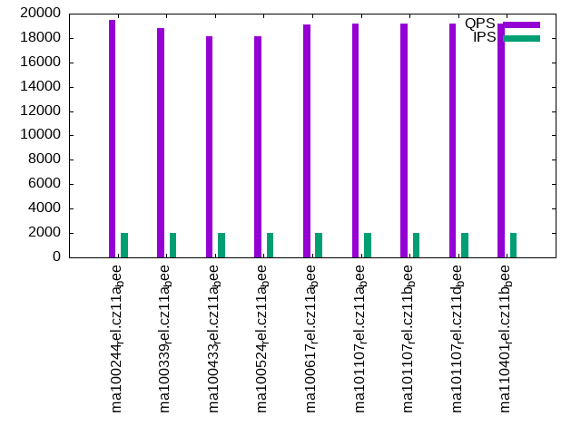
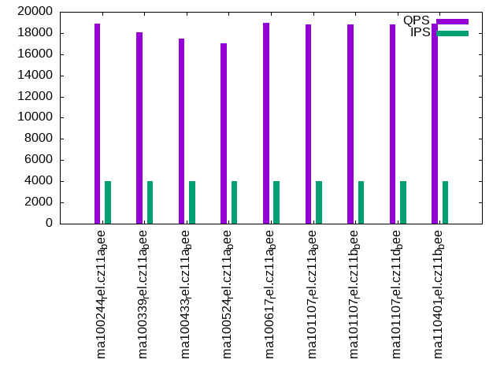

This is a report for the insert benchmark with 32M docs and 4 client(s). It is generated by scripts (bash, awk, sed) and Tufte might not be impressed. An overview of the insert benchmark is here and a short update is here. Below, by DBMS, I mean DBMS+version.config. An example is my8020.c10b40 where my means MySQL, 8020 is version 8.0.20 and c10b40 is the name for the configuration file.
The test server has 8 AMD cores, 16G RAM and an NVMe SSD. It is described here as the Beelink. The benchmark was run with 1 client and there were 1 or 3 connections per client (1 for queries or inserts without rate limits, 1+1 for rate limited inserts+deletes). It uses 4 tables with a table per client. It loads 8M rows per table without secondary indexes, creates 3 secondary indexes per table, then inserts 40m+10m rows per table with a delete per insert to avoid growing the table. It then does 6 read+write tests for 1800s each that do queries as fast as possible with 100,100,500,500,1000,1000 inserts/s and the same for deletes/s per client concurrent with the queries. The database is cached in memory. Clients and the DBMS share one server. The per-database configs are in the per-database subdirectories here.
The tested DBMS are:
The numbers are inserts/s for l.i0, l.i1 and l.i2, indexed docs (or rows) /s for l.x and queries/s for qr100, qp100 thru qr1000, qp1000" The values are the average rate over the entire test for inserts (IPS) and queries (QPS). The range of values for IPS and QPS is split into 3 parts: bottom 25%, middle 50%, top 25%. Values in the bottom 25% have a red background, values in the top 25% have a green background and values in the middle have no color. A gray background is used for values that can be ignored because the DBMS did not sustain the target insert rate. Red backgrounds are not used when the minimum value is within 80% of the max value.
| dbms | l.i0 | l.x | l.i1 | l.i2 | qr100 | qp100 | qr500 | qp500 | qr1000 | qp1000 |
|---|---|---|---|---|---|---|---|---|---|---|
| ma100244_rel.cz11a_bee | 285714 | 603775 | 43278 | 19990 | 18411 | 20957 | 17799 | 19513 | 17320 | 18897 |
| ma100339_rel.cz11a_bee | 219178 | 561405 | 48106 | 20090 | 17720 | 19830 | 17258 | 18796 | 16575 | 18093 |
| ma100433_rel.cz11a_bee | 219178 | 592594 | 47591 | 19920 | 16424 | 18731 | 16258 | 18135 | 15744 | 17476 |
| ma100524_rel.cz11a_bee | 230216 | 516131 | 51184 | 22522 | 15786 | 18452 | 15725 | 18167 | 15412 | 17035 |
| ma100617_rel.cz11a_bee | 248062 | 470590 | 51249 | 24891 | 16040 | 19524 | 16238 | 19138 | 15971 | 18966 |
| ma101107_rel.cz11a_bee | 251968 | 421054 | 48558 | 22222 | 16259 | 19804 | 16269 | 19191 | 15856 | 18791 |
| ma101107_rel.cz11b_bee | 197531 | 463770 | 40879 | 21918 | 16028 | 18924 | 16138 | 19189 | 15676 | 18808 |
| ma101107_rel.cz11d_bee | 251968 | 463770 | 48324 | 22112 | 16092 | 19075 | 16294 | 19208 | 15793 | 18780 |
| ma110401_rel.cz11b_bee | 250000 | 421054 | 42941 | 21751 | 16142 | 19489 | 16469 | 19158 | 15856 | 18863 |
This table has relative throughput, throughput for the DBMS relative to the DBMS in the first line, using the absolute throughput from the previous table. Values less than 0.95 have a yellow background. Values greater than 1.05 have a blue background.
| dbms | l.i0 | l.x | l.i1 | l.i2 | qr100 | qp100 | qr500 | qp500 | qr1000 | qp1000 |
|---|---|---|---|---|---|---|---|---|---|---|
| ma100244_rel.cz11a_bee | 1.00 | 1.00 | 1.00 | 1.00 | 1.00 | 1.00 | 1.00 | 1.00 | 1.00 | 1.00 |
| ma100339_rel.cz11a_bee | 0.77 | 0.93 | 1.11 | 1.01 | 0.96 | 0.95 | 0.97 | 0.96 | 0.96 | 0.96 |
| ma100433_rel.cz11a_bee | 0.77 | 0.98 | 1.10 | 1.00 | 0.89 | 0.89 | 0.91 | 0.93 | 0.91 | 0.92 |
| ma100524_rel.cz11a_bee | 0.81 | 0.85 | 1.18 | 1.13 | 0.86 | 0.88 | 0.88 | 0.93 | 0.89 | 0.90 |
| ma100617_rel.cz11a_bee | 0.87 | 0.78 | 1.18 | 1.25 | 0.87 | 0.93 | 0.91 | 0.98 | 0.92 | 1.00 |
| ma101107_rel.cz11a_bee | 0.88 | 0.70 | 1.12 | 1.11 | 0.88 | 0.94 | 0.91 | 0.98 | 0.92 | 0.99 |
| ma101107_rel.cz11b_bee | 0.69 | 0.77 | 0.94 | 1.10 | 0.87 | 0.90 | 0.91 | 0.98 | 0.91 | 1.00 |
| ma101107_rel.cz11d_bee | 0.88 | 0.77 | 1.12 | 1.11 | 0.87 | 0.91 | 0.92 | 0.98 | 0.91 | 0.99 |
| ma110401_rel.cz11b_bee | 0.88 | 0.70 | 0.99 | 1.09 | 0.88 | 0.93 | 0.93 | 0.98 | 0.92 | 1.00 |
This lists the average rate of inserts/s for the tests that do inserts concurrent with queries. For such tests the query rate is listed in the table above. The read+write tests are setup so that the insert rate should match the target rate every second. Cells that are not at least 95% of the target have a red background to indicate a failure to satisfy the target.
| dbms | qr100.L1 | qp100.L2 | qr500.L3 | qp500.L4 | qr1000.L5 | qp1000.L6 |
|---|---|---|---|---|---|---|
| ma100244_rel.cz11a_bee | 399 | 399 | 1994 | 1994 | 3989 | 3989 |
| ma100339_rel.cz11a_bee | 399 | 399 | 1994 | 1994 | 3987 | 3987 |
| ma100433_rel.cz11a_bee | 399 | 399 | 1994 | 1994 | 3989 | 3989 |
| ma100524_rel.cz11a_bee | 399 | 399 | 1993 | 1994 | 3989 | 3989 |
| ma100617_rel.cz11a_bee | 399 | 399 | 1994 | 1994 | 3989 | 3989 |
| ma101107_rel.cz11a_bee | 399 | 399 | 1993 | 1994 | 3989 | 3989 |
| ma101107_rel.cz11b_bee | 399 | 399 | 1994 | 1993 | 3989 | 3989 |
| ma101107_rel.cz11d_bee | 399 | 399 | 1994 | 1994 | 3989 | 3989 |
| ma110401_rel.cz11b_bee | 399 | 399 | 1993 | 1994 | 3989 | 3989 |
| target | 400 | 400 | 2000 | 2000 | 4000 | 4000 |
l.i0: load without secondary indexes. Graphs for performance per 1-second interval are here.
Average throughput:
Insert response time histogram: each cell has the percentage of responses that take <= the time in the header and max is the max response time in seconds. For the max column values in the top 25% of the range have a red background and in the bottom 25% of the range have a green background. The red background is not used when the min value is within 80% of the max value.
| dbms | 256us | 1ms | 4ms | 16ms | 64ms | 256ms | 1s | 4s | 16s | gt | max |
|---|---|---|---|---|---|---|---|---|---|---|---|
| ma100244_rel.cz11a_bee | 12.431 | 86.986 | 0.549 | 0.017 | 0.016 | 0.150 | |||||
| ma100339_rel.cz11a_bee | 1.176 | 97.269 | 1.509 | 0.029 | 0.016 | 0.154 | |||||
| ma100433_rel.cz11a_bee | 0.385 | 98.043 | 1.526 | 0.030 | 0.016 | 0.147 | |||||
| ma100524_rel.cz11a_bee | 0.961 | 97.745 | 1.038 | 0.236 | 0.020 | 0.146 | |||||
| ma100617_rel.cz11a_bee | 0.795 | 96.750 | 2.400 | 0.034 | 0.020 | 0.217 | |||||
| ma101107_rel.cz11a_bee | 3.082 | 94.691 | 2.171 | 0.037 | 0.019 | 0.196 | |||||
| ma101107_rel.cz11b_bee | 2.473 | 95.289 | 2.143 | 0.075 | 0.017 | 0.001 | 0.001 | 19.505 | |||
| ma101107_rel.cz11d_bee | 2.832 | 94.928 | 2.173 | 0.048 | 0.019 | 0.191 | |||||
| ma110401_rel.cz11b_bee | 2.108 | 95.707 | 2.125 | 0.040 | 0.019 | 0.200 |
Performance metrics for the DBMS listed above. Some are normalized by throughput, others are not. Legend for results is here.
ips qps rps rmbps wps wmbps rpq rkbpq wpi wkbpi csps cpups cspq cpupq dbgb1 dbgb2 rss maxop p50 p99 tag 285714 0 1 0.0 1029.7 92.3 0.000 0.000 0.004 0.331 29836 70.8 0.104 20 2.1 18.0 2.2 0.150 80940 58636 ma100244_rel.cz11a_bee 219178 0 0 0.0 876.5 77.9 0.000 0.000 0.004 0.364 33696 78.0 0.154 28 2.1 18.0 2.7 0.154 60624 44251 ma100339_rel.cz11a_bee 219178 0 0 0.0 904.1 78.4 0.000 0.000 0.004 0.366 33638 78.5 0.153 29 2.1 18.0 NA 0.147 60709 46349 ma100433_rel.cz11a_bee 230216 0 0 0.0 1458.8 72.3 0.000 0.000 0.006 0.322 54636 72.4 0.237 25 2.1 18.0 2.3 0.146 63930 47648 ma100524_rel.cz11a_bee 248062 0 0 0.0 756.3 62.4 0.000 0.000 0.003 0.258 40632 73.6 0.164 24 2.1 18.0 2.3 0.217 69125 52843 ma100617_rel.cz11a_bee 251968 0 0 0.0 825.8 65.9 0.000 0.000 0.003 0.268 30027 73.1 0.119 23 2.1 18.0 2.3 0.196 70388 54159 ma101107_rel.cz11a_bee 197531 0 0 0.0 676.1 51.6 0.000 0.000 0.003 0.267 24320 58.4 0.123 24 2.1 18.0 2.3 19.505 68226 0 ma101107_rel.cz11b_bee 251968 0 0 0.0 825.0 65.8 0.000 0.000 0.003 0.267 30437 73.1 0.121 23 2.1 18.0 2.3 0.191 69924 54141 ma101107_rel.cz11d_bee 250000 0 0 0.0 831.5 65.9 0.000 0.000 0.003 0.270 30993 73.2 0.124 23 2.1 18.0 2.3 0.200 69724 50046 ma110401_rel.cz11b_bee
l.x: create secondary indexes.
Average throughput:
Performance metrics for the DBMS listed above. Some are normalized by throughput, others are not. Legend for results is here.
ips qps rps rmbps wps wmbps rpq rkbpq wpi wkbpi csps cpups cspq cpupq dbgb1 dbgb2 rss maxop p50 p99 tag 603775 0 0 0.0 2291.6 453.7 0.000 0.000 0.004 0.769 19800 45.7 0.033 6 4.9 20.7 3.0 0.002 NA NA ma100244_rel.cz11a_bee 561405 0 0 0.0 2215.1 420.6 0.000 0.000 0.004 0.767 19957 46.6 0.036 7 4.9 20.7 2.9 0.002 NA NA ma100339_rel.cz11a_bee 592594 0 0 0.0 2288.0 446.9 0.000 0.000 0.004 0.772 18213 45.6 0.031 6 4.8 20.6 NA 0.002 NA NA ma100433_rel.cz11a_bee 516131 0 0 0.0 773.5 350.9 0.000 0.000 0.001 0.696 1920 44.8 0.004 7 4.8 20.6 5.0 0.002 NA NA ma100524_rel.cz11a_bee 470590 0 0 0.0 2583.4 351.8 0.000 0.000 0.005 0.766 8846 43.9 0.019 7 4.8 20.6 4.6 0.002 NA NA ma100617_rel.cz11a_bee 421054 0 0 0.0 2409.0 307.4 0.000 0.000 0.006 0.748 8497 41.3 0.020 8 4.8 20.6 4.4 0.002 NA NA ma101107_rel.cz11a_bee 463770 0 0 0.0 2475.2 329.4 0.000 0.000 0.005 0.727 8168 44.6 0.018 8 4.8 20.6 4.6 0.002 NA NA ma101107_rel.cz11b_bee 463770 0 0 0.0 2466.4 347.0 0.000 0.000 0.005 0.766 8053 44.1 0.017 8 4.8 20.6 4.6 0.002 NA NA ma101107_rel.cz11d_bee 421054 0 0 0.0 2302.8 305.9 0.000 0.000 0.005 0.744 7891 41.8 0.019 8 4.8 20.6 4.3 0.002 NA NA ma110401_rel.cz11b_bee
l.i1: continue load after secondary indexes created with 50 inserts per transaction. Graphs for performance per 1-second interval are here.
Average throughput:
Insert response time histogram: each cell has the percentage of responses that take <= the time in the header and max is the max response time in seconds. For the max column values in the top 25% of the range have a red background and in the bottom 25% of the range have a green background. The red background is not used when the min value is within 80% of the max value.
| dbms | 256us | 1ms | 4ms | 16ms | 64ms | 256ms | 1s | 4s | 16s | gt | max |
|---|---|---|---|---|---|---|---|---|---|---|---|
| ma100244_rel.cz11a_bee | 62.852 | 35.788 | 1.359 | 0.001 | 0.128 | ||||||
| ma100339_rel.cz11a_bee | 71.086 | 28.018 | 0.890 | 0.006 | 0.170 | ||||||
| ma100433_rel.cz11a_bee | 70.290 | 28.778 | 0.927 | 0.005 | 0.168 | ||||||
| ma100524_rel.cz11a_bee | 72.617 | 27.129 | 0.196 | 0.015 | 0.043 | nonzero | 1.234 | ||||
| ma100617_rel.cz11a_bee | 65.785 | 34.034 | 0.168 | 0.013 | nonzero | 0.342 | |||||
| ma101107_rel.cz11a_bee | 63.882 | 35.728 | 0.380 | 0.010 | nonzero | 0.294 | |||||
| ma101107_rel.cz11b_bee | 62.906 | 33.202 | 3.859 | 0.032 | 0.001 | 0.515 | |||||
| ma101107_rel.cz11d_bee | 63.224 | 36.385 | 0.381 | 0.009 | nonzero | 0.345 | |||||
| ma110401_rel.cz11b_bee | 65.331 | 31.546 | 3.101 | 0.022 | nonzero | 0.441 |
Delete response time histogram: each cell has the percentage of responses that take <= the time in the header and max is the max response time in seconds. For the max column values in the top 25% of the range have a red background and in the bottom 25% of the range have a green background. The red background is not used when the min value is within 80% of the max value.
| dbms | 256us | 1ms | 4ms | 16ms | 64ms | 256ms | 1s | 4s | 16s | gt | max |
|---|---|---|---|---|---|---|---|---|---|---|---|
| ma100244_rel.cz11a_bee | 64.067 | 34.791 | 1.141 | 0.001 | 0.130 | ||||||
| ma100339_rel.cz11a_bee | 72.320 | 26.911 | 0.763 | 0.006 | 0.165 | ||||||
| ma100433_rel.cz11a_bee | 71.681 | 27.516 | 0.798 | 0.005 | 0.170 | ||||||
| ma100524_rel.cz11a_bee | 75.498 | 24.289 | 0.156 | 0.014 | 0.043 | 0.993 | |||||
| ma100617_rel.cz11a_bee | 85.049 | 14.845 | 0.096 | 0.010 | nonzero | 0.341 | |||||
| ma101107_rel.cz11a_bee | 77.259 | 22.493 | 0.240 | 0.008 | nonzero | 0.293 | |||||
| ma101107_rel.cz11b_bee | 76.929 | 19.992 | 3.054 | 0.024 | nonzero | 0.352 | |||||
| ma101107_rel.cz11d_bee | 77.090 | 22.669 | 0.233 | 0.008 | nonzero | 0.339 | |||||
| ma110401_rel.cz11b_bee | 75.804 | 21.729 | 2.449 | 0.017 | nonzero | 0.324 |
Performance metrics for the DBMS listed above. Some are normalized by throughput, others are not. Legend for results is here.
ips qps rps rmbps wps wmbps rpq rkbpq wpi wkbpi csps cpups cspq cpupq dbgb1 dbgb2 rss maxop p50 p99 tag 43278 0 0 0.0 5145.7 193.4 0.000 0.000 0.119 4.575 28072 85.4 0.649 158 7.8 23.9 8.9 0.128 10788 8038 ma100244_rel.cz11a_bee 48106 0 0 0.0 5105.7 190.4 0.000 0.000 0.106 4.054 29752 84.6 0.618 141 8.2 24.7 9.4 0.170 12086 8740 ma100339_rel.cz11a_bee 47591 0 0 0.0 5223.2 193.1 0.000 0.000 0.110 4.156 29832 84.5 0.627 142 8.2 24.7 NA 0.168 11937 8787 ma100433_rel.cz11a_bee 51184 0 0 0.0 9666.9 309.3 0.000 0.000 0.189 6.187 72506 84.6 1.417 132 8.2 25.6 9.4 1.234 13235 200 ma100524_rel.cz11a_bee 51249 0 0 0.0 6264.5 226.6 0.000 0.000 0.122 4.527 96959 80.6 1.892 126 6.7 22.7 6.8 0.342 12983 7841 ma100617_rel.cz11a_bee 48558 0 2074 8.1 5851.2 215.6 0.043 0.171 0.120 4.546 75160 75.3 1.548 124 6.7 22.5 6.6 0.294 12241 8239 ma101107_rel.cz11a_bee 40879 0 1767 6.9 5256.3 184.9 0.043 0.173 0.129 4.632 69802 66.4 1.708 130 6.7 22.9 6.6 0.515 10139 5394 ma101107_rel.cz11b_bee 48324 0 2075 8.1 5865.6 215.7 0.043 0.172 0.121 4.570 75476 75.5 1.562 125 6.6 22.4 6.6 0.345 12191 7991 ma101107_rel.cz11d_bee 42941 0 1836 7.2 5427.5 192.4 0.043 0.171 0.126 4.589 70644 67.5 1.645 126 6.6 22.5 6.5 0.441 10788 6443 ma110401_rel.cz11b_bee
l.i2: continue load after secondary indexes created with 5 inserts per transaction. Graphs for performance per 1-second interval are here.
Average throughput:
Insert response time histogram: each cell has the percentage of responses that take <= the time in the header and max is the max response time in seconds. For the max column values in the top 25% of the range have a red background and in the bottom 25% of the range have a green background. The red background is not used when the min value is within 80% of the max value.
| dbms | 256us | 1ms | 4ms | 16ms | 64ms | 256ms | 1s | 4s | 16s | gt | max |
|---|---|---|---|---|---|---|---|---|---|---|---|
| ma100244_rel.cz11a_bee | 0.003 | 78.024 | 20.126 | 1.835 | 0.011 | 0.001 | 0.090 | ||||
| ma100339_rel.cz11a_bee | 0.003 | 79.533 | 18.417 | 2.012 | 0.034 | 0.001 | 0.078 | ||||
| ma100433_rel.cz11a_bee | 0.001 | 79.009 | 18.998 | 1.950 | 0.040 | 0.001 | 0.080 | ||||
| ma100524_rel.cz11a_bee | 0.012 | 82.944 | 16.327 | 0.650 | 0.065 | nonzero | 0.072 | ||||
| ma100617_rel.cz11a_bee | 0.014 | 87.824 | 11.224 | 0.933 | 0.004 | nonzero | 0.066 | ||||
| ma101107_rel.cz11a_bee | 0.011 | 82.903 | 15.979 | 1.102 | 0.004 | 0.001 | 0.145 | ||||
| ma101107_rel.cz11b_bee | 0.072 | 83.677 | 14.958 | 1.227 | 0.065 | 0.001 | 0.237 | ||||
| ma101107_rel.cz11d_bee | 0.008 | 82.505 | 16.379 | 1.103 | 0.003 | 0.001 | 0.109 | ||||
| ma110401_rel.cz11b_bee | 0.141 | 84.496 | 14.001 | 1.244 | 0.117 | 0.002 | 0.138 |
Delete response time histogram: each cell has the percentage of responses that take <= the time in the header and max is the max response time in seconds. For the max column values in the top 25% of the range have a red background and in the bottom 25% of the range have a green background. The red background is not used when the min value is within 80% of the max value.
| dbms | 256us | 1ms | 4ms | 16ms | 64ms | 256ms | 1s | 4s | 16s | gt | max |
|---|---|---|---|---|---|---|---|---|---|---|---|
| ma100244_rel.cz11a_bee | 0.004 | 78.008 | 20.151 | 1.826 | 0.010 | 0.001 | 0.090 | ||||
| ma100339_rel.cz11a_bee | 0.005 | 79.638 | 18.296 | 2.027 | 0.034 | 0.001 | 0.077 | ||||
| ma100433_rel.cz11a_bee | 0.004 | 79.246 | 18.745 | 1.965 | 0.039 | 0.001 | 0.079 | ||||
| ma100524_rel.cz11a_bee | 0.019 | 83.164 | 16.102 | 0.649 | 0.065 | nonzero | 0.073 | ||||
| ma100617_rel.cz11a_bee | 0.022 | 87.824 | 11.096 | 1.054 | 0.004 | nonzero | 0.067 | ||||
| ma101107_rel.cz11a_bee | 0.026 | 83.191 | 15.635 | 1.143 | 0.004 | 0.001 | 0.144 | ||||
| ma101107_rel.cz11b_bee | 0.125 | 83.946 | 14.618 | 1.252 | 0.057 | 0.001 | 0.220 | ||||
| ma101107_rel.cz11d_bee | 0.027 | 82.897 | 15.929 | 1.142 | 0.003 | 0.001 | 0.110 | ||||
| ma110401_rel.cz11b_bee | 0.160 | 84.532 | 13.950 | 1.252 | 0.105 | 0.002 | 0.127 |
Performance metrics for the DBMS listed above. Some are normalized by throughput, others are not. Legend for results is here.
ips qps rps rmbps wps wmbps rpq rkbpq wpi wkbpi csps cpups cspq cpupq dbgb1 dbgb2 rss maxop p50 p99 tag 19990 0 0 0.0 3093.2 118.1 0.000 0.000 0.155 6.050 64983 81.3 3.251 325 7.8 23.9 8.9 0.090 5001 3713 ma100244_rel.cz11a_bee 20090 0 0 0.0 3522.5 132.3 0.000 0.000 0.175 6.744 66595 79.5 3.315 317 8.2 24.7 9.5 0.078 5084 3511 ma100339_rel.cz11a_bee 19920 0 0 0.0 3388.3 127.3 0.000 0.000 0.170 6.543 65692 79.6 3.298 320 8.2 24.7 NA 0.080 5084 3361 ma100433_rel.cz11a_bee 22522 0 0 0.0 9827.6 313.3 0.000 0.000 0.436 14.245 108549 81.1 4.820 288 8.2 25.6 9.4 0.072 5734 190 ma100524_rel.cz11a_bee 24891 0 0 0.0 2830.8 106.5 0.000 0.000 0.114 4.379 91358 79.4 3.670 255 6.7 22.7 6.7 0.066 6213 5504 ma100617_rel.cz11a_bee 22222 0 3118 12.2 2641.7 99.3 0.140 0.561 0.119 4.576 93789 73.6 4.221 265 6.7 22.5 6.5 0.145 5572 5049 ma101107_rel.cz11a_bee 21918 0 3078 12.0 2678.2 97.5 0.140 0.562 0.122 4.554 93517 72.6 4.267 265 6.7 22.9 6.5 0.237 5529 4215 ma101107_rel.cz11b_bee 22112 0 3104 12.1 2633.4 98.9 0.140 0.561 0.119 4.582 93581 73.7 4.232 267 6.6 22.4 6.5 0.109 5546 4900 ma101107_rel.cz11d_bee 21751 0 3051 11.9 2661.6 96.8 0.140 0.561 0.122 4.556 92713 71.9 4.263 264 6.6 22.5 6.5 0.138 5507 4581 ma110401_rel.cz11b_bee
qr100.L1: range queries with 100 insert/s per client. Graphs for performance per 1-second interval are here.
Average throughput:
Query response time histogram: each cell has the percentage of responses that take <= the time in the header and max is the max response time in seconds. For max values in the top 25% of the range have a red background and in the bottom 25% of the range have a green background. The red background is not used when the min value is within 80% of the max value.
| dbms | 256us | 1ms | 4ms | 16ms | 64ms | 256ms | 1s | 4s | 16s | gt | max |
|---|---|---|---|---|---|---|---|---|---|---|---|
| ma100244_rel.cz11a_bee | 85.149 | 14.732 | 0.114 | 0.005 | nonzero | 0.027 | |||||
| ma100339_rel.cz11a_bee | 81.853 | 18.033 | 0.111 | 0.004 | nonzero | 0.029 | |||||
| ma100433_rel.cz11a_bee | 73.453 | 26.423 | 0.121 | 0.004 | nonzero | 0.026 | |||||
| ma100524_rel.cz11a_bee | 67.703 | 32.250 | 0.046 | 0.001 | 0.010 | ||||||
| ma100617_rel.cz11a_bee | 69.396 | 30.588 | 0.016 | 0.001 | 0.009 | ||||||
| ma101107_rel.cz11a_bee | 70.969 | 29.013 | 0.016 | 0.002 | 0.008 | ||||||
| ma101107_rel.cz11b_bee | 68.939 | 31.044 | 0.016 | 0.002 | 0.010 | ||||||
| ma101107_rel.cz11d_bee | 69.361 | 30.623 | 0.015 | 0.001 | 0.012 | ||||||
| ma110401_rel.cz11b_bee | 70.543 | 29.441 | 0.015 | 0.001 | 0.009 |
Insert response time histogram: each cell has the percentage of responses that take <= the time in the header and max is the max response time in seconds. For max values in the top 25% of the range have a red background and in the bottom 25% of the range have a green background. The red background is not used when the min value is within 80% of the max value.
| dbms | 256us | 1ms | 4ms | 16ms | 64ms | 256ms | 1s | 4s | 16s | gt | max |
|---|---|---|---|---|---|---|---|---|---|---|---|
| ma100244_rel.cz11a_bee | 95.604 | 4.188 | 0.208 | 0.051 | |||||||
| ma100339_rel.cz11a_bee | 94.729 | 4.868 | 0.403 | 0.040 | |||||||
| ma100433_rel.cz11a_bee | 94.549 | 5.146 | 0.306 | 0.044 | |||||||
| ma100524_rel.cz11a_bee | 99.083 | 0.917 | 0.010 | ||||||||
| ma100617_rel.cz11a_bee | 99.806 | 0.188 | 0.007 | 0.016 | |||||||
| ma101107_rel.cz11a_bee | 57.799 | 42.194 | 0.007 | 0.019 | |||||||
| ma101107_rel.cz11b_bee | 87.910 | 12.090 | 0.012 | ||||||||
| ma101107_rel.cz11d_bee | 75.174 | 24.826 | 0.014 | ||||||||
| ma110401_rel.cz11b_bee | 70.424 | 29.563 | 0.014 | 0.017 |
Delete response time histogram: each cell has the percentage of responses that take <= the time in the header and max is the max response time in seconds. For max values in the top 25% of the range have a red background and in the bottom 25% of the range have a green background. The red background is not used when the min value is within 80% of the max value.
| dbms | 256us | 1ms | 4ms | 16ms | 64ms | 256ms | 1s | 4s | 16s | gt | max |
|---|---|---|---|---|---|---|---|---|---|---|---|
| ma100244_rel.cz11a_bee | 96.819 | 3.035 | 0.146 | 0.036 | |||||||
| ma100339_rel.cz11a_bee | 96.174 | 3.625 | 0.201 | 0.038 | |||||||
| ma100433_rel.cz11a_bee | 96.174 | 3.653 | 0.174 | 0.037 | |||||||
| ma100524_rel.cz11a_bee | 99.340 | 0.660 | 0.009 | ||||||||
| ma100617_rel.cz11a_bee | 99.590 | 0.410 | 0.015 | ||||||||
| ma101107_rel.cz11a_bee | 59.639 | 40.347 | 0.014 | 0.019 | |||||||
| ma101107_rel.cz11b_bee | 87.910 | 12.090 | 0.013 | ||||||||
| ma101107_rel.cz11d_bee | 75.528 | 24.472 | 0.014 | ||||||||
| ma110401_rel.cz11b_bee | 71.264 | 28.736 | 0.015 |
Performance metrics for the DBMS listed above. Some are normalized by throughput, others are not. Legend for results is here.
ips qps rps rmbps wps wmbps rpq rkbpq wpi wkbpi csps cpups cspq cpupq dbgb1 dbgb2 rss maxop p50 p99 tag 399 18411 0 0.0 3088.2 93.7 0.000 0.000 7.748 240.587 81123 51.5 4.406 224 7.8 23.9 8.8 0.027 4557 3981 ma100244_rel.cz11a_bee 399 17720 0 0.0 3108.2 94.3 0.000 0.000 7.798 242.162 78282 51.5 4.418 232 8.2 24.7 9.5 0.029 4475 3836 ma100339_rel.cz11a_bee 399 16424 0 0.0 3103.8 94.1 0.000 0.000 7.787 241.813 73544 51.5 4.478 251 8.2 24.7 NA 0.026 4139 3614 ma100433_rel.cz11a_bee 399 15786 0 0.0 2.2 0.4 0.000 0.000 0.006 1.104 61249 50.7 3.880 257 8.2 25.6 9.4 0.010 3948 3468 ma100524_rel.cz11a_bee 399 16040 0 0.0 13.8 0.8 0.000 0.000 0.035 1.952 61166 51.1 3.813 255 6.7 22.7 6.7 0.009 3964 3438 ma100617_rel.cz11a_bee 399 16259 10 0.0 9.3 0.6 0.001 0.003 0.023 1.645 61983 50.9 3.812 250 6.7 22.5 6.5 0.008 4029 3532 ma101107_rel.cz11a_bee 399 16028 14 0.1 8.2 0.6 0.001 0.003 0.021 1.524 61135 50.9 3.814 254 6.7 22.9 6.5 0.010 3996 3500 ma101107_rel.cz11b_bee 399 16092 12 0.0 19.7 0.9 0.001 0.003 0.049 2.406 61430 51.0 3.818 254 6.6 22.4 6.5 0.012 4012 3500 ma101107_rel.cz11d_bee 399 16142 11 0.0 13.7 0.8 0.001 0.003 0.034 1.933 61560 51.0 3.814 253 6.6 22.5 6.5 0.009 4013 3564 ma110401_rel.cz11b_bee
qp100.L2: point queries with 100 insert/s per client. Graphs for performance per 1-second interval are here.
Average throughput:
Query response time histogram: each cell has the percentage of responses that take <= the time in the header and max is the max response time in seconds. For max values in the top 25% of the range have a red background and in the bottom 25% of the range have a green background. The red background is not used when the min value is within 80% of the max value.
| dbms | 256us | 1ms | 4ms | 16ms | 64ms | 256ms | 1s | 4s | 16s | gt | max |
|---|---|---|---|---|---|---|---|---|---|---|---|
| ma100244_rel.cz11a_bee | 98.347 | 1.626 | 0.026 | 0.001 | nonzero | 0.021 | |||||
| ma100339_rel.cz11a_bee | 97.018 | 2.956 | 0.026 | 0.001 | nonzero | 0.022 | |||||
| ma100433_rel.cz11a_bee | 94.288 | 5.679 | 0.032 | 0.001 | nonzero | 0.021 | |||||
| ma100524_rel.cz11a_bee | 93.770 | 6.222 | 0.008 | nonzero | 0.008 | ||||||
| ma100617_rel.cz11a_bee | 97.055 | 2.901 | 0.043 | 0.001 | 0.008 | ||||||
| ma101107_rel.cz11a_bee | 98.034 | 1.923 | 0.042 | 0.001 | 0.008 | ||||||
| ma101107_rel.cz11b_bee | 94.936 | 5.019 | 0.044 | 0.002 | 0.010 | ||||||
| ma101107_rel.cz11d_bee | 95.813 | 4.141 | 0.045 | 0.001 | 0.009 | ||||||
| ma110401_rel.cz11b_bee | 96.711 | 3.246 | 0.042 | 0.001 | 0.010 |
Insert response time histogram: each cell has the percentage of responses that take <= the time in the header and max is the max response time in seconds. For max values in the top 25% of the range have a red background and in the bottom 25% of the range have a green background. The red background is not used when the min value is within 80% of the max value.
| dbms | 256us | 1ms | 4ms | 16ms | 64ms | 256ms | 1s | 4s | 16s | gt | max |
|---|---|---|---|---|---|---|---|---|---|---|---|
| ma100244_rel.cz11a_bee | 95.465 | 4.174 | 0.361 | 0.047 | |||||||
| ma100339_rel.cz11a_bee | 94.035 | 5.590 | 0.375 | 0.036 | |||||||
| ma100433_rel.cz11a_bee | 94.861 | 4.854 | 0.285 | 0.034 | |||||||
| ma100524_rel.cz11a_bee | 99.160 | 0.840 | 0.009 | ||||||||
| ma100617_rel.cz11a_bee | 99.708 | 0.285 | 0.007 | 0.017 | |||||||
| ma101107_rel.cz11a_bee | 81.306 | 18.694 | 0.015 | ||||||||
| ma101107_rel.cz11b_bee | 87.646 | 12.354 | 0.015 | ||||||||
| ma101107_rel.cz11d_bee | 86.646 | 13.347 | 0.007 | 0.016 | |||||||
| ma110401_rel.cz11b_bee | 88.153 | 11.847 | 0.013 |
Delete response time histogram: each cell has the percentage of responses that take <= the time in the header and max is the max response time in seconds. For max values in the top 25% of the range have a red background and in the bottom 25% of the range have a green background. The red background is not used when the min value is within 80% of the max value.
| dbms | 256us | 1ms | 4ms | 16ms | 64ms | 256ms | 1s | 4s | 16s | gt | max |
|---|---|---|---|---|---|---|---|---|---|---|---|
| ma100244_rel.cz11a_bee | 96.465 | 3.278 | 0.257 | 0.033 | |||||||
| ma100339_rel.cz11a_bee | 95.924 | 3.826 | 0.250 | 0.031 | |||||||
| ma100433_rel.cz11a_bee | 96.382 | 3.410 | 0.208 | 0.033 | |||||||
| ma100524_rel.cz11a_bee | 99.674 | 0.326 | 0.010 | ||||||||
| ma100617_rel.cz11a_bee | 99.646 | 0.347 | 0.007 | 0.016 | |||||||
| ma101107_rel.cz11a_bee | 81.500 | 18.500 | 0.014 | ||||||||
| ma101107_rel.cz11b_bee | 87.785 | 12.215 | 0.016 | ||||||||
| ma101107_rel.cz11d_bee | 86.625 | 13.375 | 0.015 | ||||||||
| ma110401_rel.cz11b_bee | 88.097 | 11.896 | 0.007 | 0.017 |
Performance metrics for the DBMS listed above. Some are normalized by throughput, others are not. Legend for results is here.
ips qps rps rmbps wps wmbps rpq rkbpq wpi wkbpi csps cpups cspq cpupq dbgb1 dbgb2 rss maxop p50 p99 tag 399 20957 0 0.0 3079.6 93.4 0.000 0.000 7.722 239.790 93836 52.3 4.478 200 7.8 23.9 8.9 0.021 5273 4667 ma100244_rel.cz11a_bee 399 19830 0 0.0 3086.7 93.6 0.000 0.000 7.740 240.375 88523 52.2 4.464 211 8.2 24.7 9.5 0.022 5021 4316 ma100339_rel.cz11a_bee 399 18731 0 0.0 3089.4 93.7 0.000 0.000 7.747 240.574 82779 52.1 4.419 223 8.2 24.7 NA 0.021 4811 4171 ma100433_rel.cz11a_bee 399 18452 0 0.0 2.3 0.4 0.000 0.000 0.006 1.099 69106 50.6 3.745 219 8.2 25.6 9.4 0.008 4619 4299 ma100524_rel.cz11a_bee 399 19524 0 0.0 25.4 1.1 0.000 0.000 0.064 2.806 77448 50.9 3.967 209 6.7 22.7 6.7 0.008 4955 3996 ma100617_rel.cz11a_bee 399 19804 13 0.1 21.2 1.0 0.001 0.003 0.053 2.520 78848 51.0 3.981 206 6.7 22.5 6.5 0.008 4981 4509 ma101107_rel.cz11a_bee 399 18924 14 0.1 20.0 0.9 0.001 0.003 0.050 2.391 74496 50.7 3.937 214 6.7 22.9 6.6 0.010 4797 3948 ma101107_rel.cz11b_bee 399 19075 14 0.1 25.4 1.1 0.001 0.003 0.064 2.834 75405 50.7 3.953 213 6.6 22.4 6.5 0.009 4891 3964 ma101107_rel.cz11d_bee 399 19489 14 0.1 26.1 1.1 0.001 0.003 0.066 2.833 77240 50.7 3.963 208 6.6 22.5 6.5 0.010 5003 4014 ma110401_rel.cz11b_bee
qr500.L3: range queries with 500 insert/s per client. Graphs for performance per 1-second interval are here.
Average throughput:
Query response time histogram: each cell has the percentage of responses that take <= the time in the header and max is the max response time in seconds. For max values in the top 25% of the range have a red background and in the bottom 25% of the range have a green background. The red background is not used when the min value is within 80% of the max value.
| dbms | 256us | 1ms | 4ms | 16ms | 64ms | 256ms | 1s | 4s | 16s | gt | max |
|---|---|---|---|---|---|---|---|---|---|---|---|
| ma100244_rel.cz11a_bee | 85.099 | 14.449 | 0.410 | 0.041 | 0.001 | 0.036 | |||||
| ma100339_rel.cz11a_bee | 82.509 | 17.128 | 0.319 | 0.042 | 0.001 | 0.056 | |||||
| ma100433_rel.cz11a_bee | 76.213 | 23.401 | 0.342 | 0.042 | 0.001 | 0.038 | |||||
| ma100524_rel.cz11a_bee | 69.002 | 30.861 | 0.116 | 0.022 | nonzero | 0.025 | |||||
| ma100617_rel.cz11a_bee | 72.675 | 27.202 | 0.110 | 0.013 | nonzero | 0.020 | |||||
| ma101107_rel.cz11a_bee | 72.673 | 27.227 | 0.088 | 0.012 | nonzero | 0.024 | |||||
| ma101107_rel.cz11b_bee | 71.593 | 28.304 | 0.087 | 0.016 | nonzero | 0.042 | |||||
| ma101107_rel.cz11d_bee | 72.381 | 27.521 | 0.087 | 0.011 | nonzero | 0.019 | |||||
| ma110401_rel.cz11b_bee | 74.076 | 25.833 | 0.079 | 0.012 | nonzero | 0.031 |
Insert response time histogram: each cell has the percentage of responses that take <= the time in the header and max is the max response time in seconds. For max values in the top 25% of the range have a red background and in the bottom 25% of the range have a green background. The red background is not used when the min value is within 80% of the max value.
| dbms | 256us | 1ms | 4ms | 16ms | 64ms | 256ms | 1s | 4s | 16s | gt | max |
|---|---|---|---|---|---|---|---|---|---|---|---|
| ma100244_rel.cz11a_bee | 77.314 | 20.871 | 1.815 | 0.063 | |||||||
| ma100339_rel.cz11a_bee | 71.251 | 26.001 | 2.747 | 0.054 | |||||||
| ma100433_rel.cz11a_bee | 72.165 | 25.321 | 2.514 | 0.057 | |||||||
| ma100524_rel.cz11a_bee | 95.962 | 3.978 | 0.060 | 0.036 | |||||||
| ma100617_rel.cz11a_bee | 95.310 | 4.640 | 0.050 | 0.039 | |||||||
| ma101107_rel.cz11a_bee | 93.333 | 6.599 | 0.068 | 0.040 | |||||||
| ma101107_rel.cz11b_bee | 93.126 | 6.711 | 0.161 | 0.001 | 0.065 | ||||||
| ma101107_rel.cz11d_bee | 93.469 | 6.476 | 0.054 | 0.030 | |||||||
| ma110401_rel.cz11b_bee | 93.364 | 6.510 | 0.126 | 0.036 |
Delete response time histogram: each cell has the percentage of responses that take <= the time in the header and max is the max response time in seconds. For max values in the top 25% of the range have a red background and in the bottom 25% of the range have a green background. The red background is not used when the min value is within 80% of the max value.
| dbms | 256us | 1ms | 4ms | 16ms | 64ms | 256ms | 1s | 4s | 16s | gt | max |
|---|---|---|---|---|---|---|---|---|---|---|---|
| ma100244_rel.cz11a_bee | 82.043 | 16.636 | 1.319 | 0.001 | 0.067 | ||||||
| ma100339_rel.cz11a_bee | 77.429 | 20.617 | 1.954 | 0.062 | |||||||
| ma100433_rel.cz11a_bee | 78.344 | 19.893 | 1.762 | 0.058 | |||||||
| ma100524_rel.cz11a_bee | 97.531 | 2.447 | 0.022 | 0.037 | |||||||
| ma100617_rel.cz11a_bee | 97.214 | 2.763 | 0.024 | 0.039 | |||||||
| ma101107_rel.cz11a_bee | 95.182 | 4.783 | 0.035 | 0.040 | |||||||
| ma101107_rel.cz11b_bee | 95.106 | 4.814 | 0.081 | 0.039 | |||||||
| ma101107_rel.cz11d_bee | 95.265 | 4.715 | 0.019 | 0.029 | |||||||
| ma110401_rel.cz11b_bee | 95.031 | 4.897 | 0.072 | 0.035 |
Performance metrics for the DBMS listed above. Some are normalized by throughput, others are not. Legend for results is here.
ips qps rps rmbps wps wmbps rpq rkbpq wpi wkbpi csps cpups cspq cpupq dbgb1 dbgb2 rss maxop p50 p99 tag 1994 17799 0 0.0 10070.0 306.3 0.000 0.000 5.049 157.263 100743 55.2 5.660 248 7.8 23.9 8.9 0.036 4443 3900 ma100244_rel.cz11a_bee 1994 17258 0 0.0 10156.1 309.0 0.000 0.000 5.092 158.631 98427 55.3 5.703 256 8.2 24.7 9.5 0.056 4363 3821 ma100339_rel.cz11a_bee 1994 16258 0 0.0 10116.6 307.8 0.000 0.000 5.073 158.016 94381 55.3 5.805 272 8.2 24.7 NA 0.038 4091 3548 ma100433_rel.cz11a_bee 1993 15725 0 0.0 6.8 2.1 0.000 0.000 0.003 1.084 61188 52.0 3.891 265 8.2 25.6 9.4 0.025 3933 3404 ma100524_rel.cz11a_bee 1994 16238 0 0.0 230.0 8.3 0.000 0.000 0.115 4.276 62263 52.4 3.835 258 6.7 22.7 6.7 0.020 4075 3502 ma100617_rel.cz11a_bee 1993 16269 72 0.3 240.5 8.7 0.004 0.018 0.121 4.455 62602 52.6 3.848 259 6.7 22.5 6.5 0.024 4044 3532 ma101107_rel.cz11a_bee 1994 16138 73 0.3 245.5 8.6 0.005 0.018 0.123 4.429 62149 52.5 3.851 260 6.7 22.9 6.6 0.042 4013 3468 ma101107_rel.cz11b_bee 1994 16294 72 0.3 227.2 8.3 0.004 0.018 0.114 4.258 62675 52.7 3.846 259 6.6 22.4 6.5 0.019 4076 3516 ma101107_rel.cz11d_bee 1993 16469 73 0.3 236.5 8.4 0.004 0.018 0.119 4.293 63307 52.5 3.844 255 6.6 22.5 6.5 0.031 4093 3582 ma110401_rel.cz11b_bee
qp500.L4: point queries with 500 insert/s per client. Graphs for performance per 1-second interval are here.
Average throughput:
Query response time histogram: each cell has the percentage of responses that take <= the time in the header and max is the max response time in seconds. For max values in the top 25% of the range have a red background and in the bottom 25% of the range have a green background. The red background is not used when the min value is within 80% of the max value.
| dbms | 256us | 1ms | 4ms | 16ms | 64ms | 256ms | 1s | 4s | 16s | gt | max |
|---|---|---|---|---|---|---|---|---|---|---|---|
| ma100244_rel.cz11a_bee | 96.597 | 3.251 | 0.141 | 0.011 | nonzero | 0.029 | |||||
| ma100339_rel.cz11a_bee | 95.183 | 4.693 | 0.113 | 0.011 | nonzero | 0.022 | |||||
| ma100433_rel.cz11a_bee | 92.701 | 7.171 | 0.116 | 0.012 | nonzero | 0.030 | |||||
| ma100524_rel.cz11a_bee | 92.284 | 7.694 | 0.018 | 0.004 | nonzero | 0.029 | |||||
| ma100617_rel.cz11a_bee | 96.054 | 3.824 | 0.111 | 0.011 | nonzero | 0.017 | |||||
| ma101107_rel.cz11a_bee | 96.132 | 3.759 | 0.099 | 0.010 | nonzero | 0.019 | |||||
| ma101107_rel.cz11b_bee | 95.938 | 3.943 | 0.108 | 0.012 | nonzero | 0.018 | |||||
| ma101107_rel.cz11d_bee | 96.113 | 3.766 | 0.110 | 0.011 | nonzero | 0.018 | |||||
| ma110401_rel.cz11b_bee | 95.904 | 3.983 | 0.100 | 0.013 | nonzero | 0.018 |
Insert response time histogram: each cell has the percentage of responses that take <= the time in the header and max is the max response time in seconds. For max values in the top 25% of the range have a red background and in the bottom 25% of the range have a green background. The red background is not used when the min value is within 80% of the max value.
| dbms | 256us | 1ms | 4ms | 16ms | 64ms | 256ms | 1s | 4s | 16s | gt | max |
|---|---|---|---|---|---|---|---|---|---|---|---|
| ma100244_rel.cz11a_bee | 82.782 | 15.338 | 1.879 | 0.001 | 0.069 | ||||||
| ma100339_rel.cz11a_bee | 80.006 | 17.908 | 2.085 | 0.001 | 0.066 | ||||||
| ma100433_rel.cz11a_bee | 77.586 | 20.044 | 2.369 | 0.059 | |||||||
| ma100524_rel.cz11a_bee | 97.156 | 2.797 | 0.047 | 0.038 | |||||||
| ma100617_rel.cz11a_bee | 96.814 | 3.151 | 0.035 | 0.039 | |||||||
| ma101107_rel.cz11a_bee | 95.129 | 4.835 | 0.036 | 0.030 | |||||||
| ma101107_rel.cz11b_bee | 92.156 | 7.754 | 0.090 | 0.040 | |||||||
| ma101107_rel.cz11d_bee | 93.353 | 6.603 | 0.044 | 0.039 | |||||||
| ma110401_rel.cz11b_bee | 93.774 | 6.112 | 0.114 | 0.046 |
Delete response time histogram: each cell has the percentage of responses that take <= the time in the header and max is the max response time in seconds. For max values in the top 25% of the range have a red background and in the bottom 25% of the range have a green background. The red background is not used when the min value is within 80% of the max value.
| dbms | 256us | 1ms | 4ms | 16ms | 64ms | 256ms | 1s | 4s | 16s | gt | max |
|---|---|---|---|---|---|---|---|---|---|---|---|
| ma100244_rel.cz11a_bee | 87.026 | 11.749 | 1.225 | 0.052 | |||||||
| ma100339_rel.cz11a_bee | 85.125 | 13.482 | 1.393 | 0.051 | |||||||
| ma100433_rel.cz11a_bee | 83.439 | 15.006 | 1.556 | 0.056 | |||||||
| ma100524_rel.cz11a_bee | 98.268 | 1.706 | 0.026 | 0.038 | |||||||
| ma100617_rel.cz11a_bee | 98.118 | 1.869 | 0.013 | 0.037 | |||||||
| ma101107_rel.cz11a_bee | 96.296 | 3.690 | 0.014 | 0.028 | |||||||
| ma101107_rel.cz11b_bee | 94.221 | 5.740 | 0.039 | 0.040 | |||||||
| ma101107_rel.cz11d_bee | 95.157 | 4.821 | 0.022 | 0.039 | |||||||
| ma110401_rel.cz11b_bee | 95.283 | 4.657 | 0.060 | 0.045 |
Performance metrics for the DBMS listed above. Some are normalized by throughput, others are not. Legend for results is here.
ips qps rps rmbps wps wmbps rpq rkbpq wpi wkbpi csps cpups cspq cpupq dbgb1 dbgb2 rss maxop p50 p99 tag 1994 19513 0 0.0 10282.8 312.7 0.000 0.000 5.156 160.562 108909 57.3 5.581 235 7.8 23.9 8.8 0.029 4910 4459 ma100244_rel.cz11a_bee 1994 18796 0 0.0 10284.9 312.9 0.000 0.000 5.157 160.632 106146 57.2 5.647 243 8.2 24.7 9.5 0.022 4731 4299 ma100339_rel.cz11a_bee 1994 18135 0 0.0 10297.2 313.2 0.000 0.000 5.163 160.820 103790 57.2 5.723 252 8.2 24.7 NA 0.030 4571 4155 ma100433_rel.cz11a_bee 1994 18167 0 0.0 6.8 2.1 0.000 0.000 0.003 1.089 67912 52.8 3.738 233 8.2 25.6 9.4 0.029 4539 4221 ma100524_rel.cz11a_bee 1994 19138 0 0.0 202.1 7.5 0.000 0.000 0.101 3.863 76986 52.3 4.023 219 6.7 22.7 6.7 0.017 4843 4379 ma100617_rel.cz11a_bee 1994 19191 74 0.3 195.9 7.4 0.004 0.015 0.098 3.802 77261 52.4 4.026 218 6.7 22.5 6.5 0.019 4827 4395 ma101107_rel.cz11a_bee 1993 19189 74 0.3 202.0 7.4 0.004 0.015 0.101 3.810 77308 52.4 4.029 218 6.7 22.9 6.5 0.018 4855 4411 ma101107_rel.cz11b_bee 1994 19208 73 0.3 211.7 7.8 0.004 0.015 0.106 4.025 77412 52.4 4.030 218 6.6 22.4 6.5 0.018 4859 4395 ma101107_rel.cz11d_bee 1994 19158 73 0.3 204.8 7.5 0.004 0.015 0.103 3.842 77112 52.2 4.025 218 6.6 22.5 6.5 0.018 4813 4331 ma110401_rel.cz11b_bee
qr1000.L5: range queries with 1000 insert/s per client. Graphs for performance per 1-second interval are here.
Average throughput:
Query response time histogram: each cell has the percentage of responses that take <= the time in the header and max is the max response time in seconds. For max values in the top 25% of the range have a red background and in the bottom 25% of the range have a green background. The red background is not used when the min value is within 80% of the max value.
| dbms | 256us | 1ms | 4ms | 16ms | 64ms | 256ms | 1s | 4s | 16s | gt | max |
|---|---|---|---|---|---|---|---|---|---|---|---|
| ma100244_rel.cz11a_bee | 84.873 | 14.546 | 0.500 | 0.078 | 0.002 | 0.037 | |||||
| ma100339_rel.cz11a_bee | 81.427 | 17.959 | 0.541 | 0.071 | 0.003 | 0.042 | |||||
| ma100433_rel.cz11a_bee | 76.090 | 23.282 | 0.550 | 0.075 | 0.003 | 0.051 | |||||
| ma100524_rel.cz11a_bee | 71.003 | 28.491 | 0.455 | 0.051 | nonzero | 0.031 | |||||
| ma100617_rel.cz11a_bee | 72.905 | 26.815 | 0.252 | 0.027 | nonzero | 0.028 | |||||
| ma101107_rel.cz11a_bee | 72.121 | 27.597 | 0.255 | 0.027 | nonzero | 0.025 | |||||
| ma101107_rel.cz11b_bee | 70.838 | 28.872 | 0.254 | 0.034 | 0.001 | nonzero | 0.077 | ||||
| ma101107_rel.cz11d_bee | 71.551 | 28.145 | 0.278 | 0.026 | nonzero | 0.040 | |||||
| ma110401_rel.cz11b_bee | 72.217 | 27.531 | 0.225 | 0.026 | nonzero | 0.028 |
Insert response time histogram: each cell has the percentage of responses that take <= the time in the header and max is the max response time in seconds. For max values in the top 25% of the range have a red background and in the bottom 25% of the range have a green background. The red background is not used when the min value is within 80% of the max value.
| dbms | 256us | 1ms | 4ms | 16ms | 64ms | 256ms | 1s | 4s | 16s | gt | max |
|---|---|---|---|---|---|---|---|---|---|---|---|
| ma100244_rel.cz11a_bee | 58.472 | 37.326 | 4.202 | 0.001 | 0.067 | ||||||
| ma100339_rel.cz11a_bee | 61.134 | 35.042 | 3.822 | 0.002 | 0.074 | ||||||
| ma100433_rel.cz11a_bee | 59.494 | 36.493 | 4.012 | 0.001 | 0.070 | ||||||
| ma100524_rel.cz11a_bee | 64.597 | 33.784 | 1.619 | 0.054 | |||||||
| ma100617_rel.cz11a_bee | 78.119 | 21.629 | 0.251 | 0.050 | |||||||
| ma101107_rel.cz11a_bee | 73.843 | 25.893 | 0.264 | 0.042 | |||||||
| ma101107_rel.cz11b_bee | 72.099 | 27.505 | 0.395 | 0.001 | 0.069 | ||||||
| ma101107_rel.cz11d_bee | 69.611 | 30.113 | 0.276 | 0.039 | |||||||
| ma110401_rel.cz11b_bee | 76.920 | 22.660 | 0.420 | 0.051 |
Delete response time histogram: each cell has the percentage of responses that take <= the time in the header and max is the max response time in seconds. For max values in the top 25% of the range have a red background and in the bottom 25% of the range have a green background. The red background is not used when the min value is within 80% of the max value.
| dbms | 256us | 1ms | 4ms | 16ms | 64ms | 256ms | 1s | 4s | 16s | gt | max |
|---|---|---|---|---|---|---|---|---|---|---|---|
| ma100244_rel.cz11a_bee | 65.162 | 31.508 | 3.330 | 0.063 | |||||||
| ma100339_rel.cz11a_bee | 68.388 | 28.774 | 2.838 | 0.001 | 0.070 | ||||||
| ma100433_rel.cz11a_bee | 67.332 | 29.547 | 3.122 | 0.062 | |||||||
| ma100524_rel.cz11a_bee | 71.760 | 27.213 | 1.028 | 0.058 | |||||||
| ma100617_rel.cz11a_bee | 83.255 | 16.540 | 0.205 | 0.042 | |||||||
| ma101107_rel.cz11a_bee | 79.099 | 20.728 | 0.174 | 0.044 | |||||||
| ma101107_rel.cz11b_bee | 77.497 | 22.257 | 0.245 | 0.001 | 0.071 | ||||||
| ma101107_rel.cz11d_bee | 75.333 | 24.503 | 0.164 | 0.042 | |||||||
| ma110401_rel.cz11b_bee | 81.279 | 18.439 | 0.282 | 0.053 |
Performance metrics for the DBMS listed above. Some are normalized by throughput, others are not. Legend for results is here.
ips qps rps rmbps wps wmbps rpq rkbpq wpi wkbpi csps cpups cspq cpupq dbgb1 dbgb2 rss maxop p50 p99 tag 3989 17320 0 0.0 10190.0 312.0 0.000 0.000 2.555 80.088 98566 57.7 5.691 267 7.8 23.9 8.8 0.037 4365 3852 ma100244_rel.cz11a_bee 3987 16575 0 0.0 10529.8 322.4 0.000 0.000 2.641 82.798 97344 57.5 5.873 278 8.2 24.7 9.5 0.042 4187 3644 ma100339_rel.cz11a_bee 3989 15744 0 0.0 10405.4 318.6 0.000 0.000 2.609 81.784 93425 57.7 5.934 293 8.2 24.7 NA 0.051 3996 3470 ma100433_rel.cz11a_bee 3989 15412 0 0.0 5361.8 163.1 0.000 0.000 1.344 41.873 84473 55.3 5.481 287 8.2 25.6 9.4 0.031 3852 3308 ma100524_rel.cz11a_bee 3989 15971 0 0.0 401.7 15.0 0.000 0.000 0.101 3.847 62072 54.2 3.886 271 6.7 22.7 6.7 0.028 4012 3452 ma100617_rel.cz11a_bee 3989 15856 137 0.5 425.7 15.8 0.009 0.035 0.107 4.053 61745 54.3 3.894 274 6.7 22.5 6.5 0.025 3931 3420 ma101107_rel.cz11a_bee 3989 15676 135 0.5 436.5 15.7 0.009 0.034 0.109 4.035 61213 54.2 3.905 277 6.7 22.9 6.5 0.077 3933 3404 ma101107_rel.cz11b_bee 3989 15793 130 0.5 422.5 15.7 0.008 0.033 0.106 4.032 61493 54.3 3.894 275 6.6 22.4 6.5 0.040 3964 3404 ma101107_rel.cz11d_bee 3989 15856 138 0.5 442.3 15.9 0.009 0.035 0.111 4.070 61653 54.2 3.888 273 6.6 22.5 6.5 0.028 3966 3422 ma110401_rel.cz11b_bee
qp1000.L6: point queries with 1000 insert/s per client. Graphs for performance per 1-second interval are here.
Average throughput:
Query response time histogram: each cell has the percentage of responses that take <= the time in the header and max is the max response time in seconds. For max values in the top 25% of the range have a red background and in the bottom 25% of the range have a green background. The red background is not used when the min value is within 80% of the max value.
| dbms | 256us | 1ms | 4ms | 16ms | 64ms | 256ms | 1s | 4s | 16s | gt | max |
|---|---|---|---|---|---|---|---|---|---|---|---|
| ma100244_rel.cz11a_bee | 96.079 | 3.708 | 0.181 | 0.032 | 0.001 | 0.042 | |||||
| ma100339_rel.cz11a_bee | 94.091 | 5.703 | 0.179 | 0.026 | 0.001 | 0.038 | |||||
| ma100433_rel.cz11a_bee | 90.413 | 9.374 | 0.184 | 0.028 | 0.001 | 0.033 | |||||
| ma100524_rel.cz11a_bee | 87.494 | 12.276 | 0.208 | 0.023 | nonzero | 0.030 | |||||
| ma100617_rel.cz11a_bee | 94.652 | 5.225 | 0.110 | 0.013 | nonzero | 0.029 | |||||
| ma101107_rel.cz11a_bee | 93.645 | 6.233 | 0.111 | 0.012 | nonzero | 0.016 | |||||
| ma101107_rel.cz11b_bee | 93.720 | 6.162 | 0.107 | 0.011 | nonzero | 0.020 | |||||
| ma101107_rel.cz11d_bee | 93.194 | 6.697 | 0.098 | 0.011 | nonzero | 0.022 | |||||
| ma110401_rel.cz11b_bee | 93.863 | 6.024 | 0.100 | 0.013 | nonzero | 0.025 |
Insert response time histogram: each cell has the percentage of responses that take <= the time in the header and max is the max response time in seconds. For max values in the top 25% of the range have a red background and in the bottom 25% of the range have a green background. The red background is not used when the min value is within 80% of the max value.
| dbms | 256us | 1ms | 4ms | 16ms | 64ms | 256ms | 1s | 4s | 16s | gt | max |
|---|---|---|---|---|---|---|---|---|---|---|---|
| ma100244_rel.cz11a_bee | 63.572 | 31.534 | 4.893 | 0.001 | 0.068 | ||||||
| ma100339_rel.cz11a_bee | 66.365 | 29.410 | 4.221 | 0.004 | 0.084 | ||||||
| ma100433_rel.cz11a_bee | 64.490 | 30.873 | 4.636 | 0.001 | 0.066 | ||||||
| ma100524_rel.cz11a_bee | 62.524 | 34.760 | 2.716 | 0.054 | |||||||
| ma100617_rel.cz11a_bee | 80.290 | 19.301 | 0.408 | 0.054 | |||||||
| ma101107_rel.cz11a_bee | 76.844 | 22.881 | 0.276 | 0.038 | |||||||
| ma101107_rel.cz11b_bee | 80.263 | 19.380 | 0.358 | 0.050 | |||||||
| ma101107_rel.cz11d_bee | 82.680 | 17.042 | 0.278 | 0.044 | |||||||
| ma110401_rel.cz11b_bee | 84.777 | 14.833 | 0.390 | 0.053 |
Delete response time histogram: each cell has the percentage of responses that take <= the time in the header and max is the max response time in seconds. For max values in the top 25% of the range have a red background and in the bottom 25% of the range have a green background. The red background is not used when the min value is within 80% of the max value.
| dbms | 256us | 1ms | 4ms | 16ms | 64ms | 256ms | 1s | 4s | 16s | gt | max |
|---|---|---|---|---|---|---|---|---|---|---|---|
| ma100244_rel.cz11a_bee | 69.903 | 26.408 | 3.688 | 0.001 | 0.067 | ||||||
| ma100339_rel.cz11a_bee | 73.563 | 23.320 | 3.115 | 0.001 | 0.072 | ||||||
| ma100433_rel.cz11a_bee | 71.824 | 24.800 | 3.374 | 0.003 | 0.069 | ||||||
| ma100524_rel.cz11a_bee | 69.446 | 28.818 | 1.735 | 0.001 | 0.067 | ||||||
| ma100617_rel.cz11a_bee | 84.628 | 15.036 | 0.335 | 0.060 | |||||||
| ma101107_rel.cz11a_bee | 81.510 | 18.310 | 0.181 | 0.042 | |||||||
| ma101107_rel.cz11b_bee | 84.139 | 15.667 | 0.194 | 0.038 | |||||||
| ma101107_rel.cz11d_bee | 86.371 | 13.469 | 0.160 | 0.051 | |||||||
| ma110401_rel.cz11b_bee | 87.701 | 12.081 | 0.218 | 0.053 |
Performance metrics for the DBMS listed above. Some are normalized by throughput, others are not. Legend for results is here.
ips qps rps rmbps wps wmbps rpq rkbpq wpi wkbpi csps cpups cspq cpupq dbgb1 dbgb2 rss maxop p50 p99 tag 3989 18897 0 0.0 10547.4 322.7 0.000 0.000 2.644 82.850 104909 60.2 5.552 255 7.8 23.9 8.8 0.042 4747 4283 ma100244_rel.cz11a_bee 3987 18093 0 0.0 10694.4 327.3 0.000 0.000 2.683 84.066 102940 60.1 5.689 266 8.2 24.7 9.5 0.038 4525 4123 ma100339_rel.cz11a_bee 3989 17476 0 0.0 10701.6 327.5 0.000 0.000 2.683 84.079 100649 60.1 5.759 275 8.2 24.7 NA 0.033 4411 4012 ma100433_rel.cz11a_bee 3989 17035 0 0.0 10275.7 310.7 0.000 0.000 2.576 79.760 109689 58.3 6.439 274 8.2 25.6 9.4 0.030 4283 3947 ma100524_rel.cz11a_bee 3989 18966 0 0.0 423.2 15.6 0.000 0.000 0.106 4.010 76387 55.1 4.028 232 6.7 22.7 6.7 0.029 4763 4474 ma100617_rel.cz11a_bee 3989 18791 139 0.5 420.7 15.6 0.007 0.030 0.105 4.009 75952 55.2 4.042 235 6.7 22.5 6.5 0.016 4715 4413 ma101107_rel.cz11a_bee 3989 18808 141 0.6 440.2 15.8 0.007 0.030 0.110 4.060 76093 55.2 4.046 235 6.7 22.9 6.5 0.020 4731 4381 ma101107_rel.cz11b_bee 3989 18780 144 0.6 422.9 15.7 0.008 0.031 0.106 4.028 75746 55.4 4.033 236 6.6 22.4 6.5 0.022 4717 3981 ma101107_rel.cz11d_bee 3989 18863 143 0.6 436.6 15.7 0.008 0.030 0.109 4.031 76306 55.0 4.045 233 6.6 22.5 6.5 0.025 4715 4379 ma110401_rel.cz11b_bee
l.i0: load without secondary indexes
Performance metrics for all DBMS, not just the ones listed above. Some are normalized by throughput, others are not. Legend for results is here.
ips qps rps rmbps wps wmbps rpq rkbpq wpi wkbpi csps cpups cspq cpupq dbgb1 dbgb2 rss maxop p50 p99 tag 285714 0 1 0.0 1029.7 92.3 0.000 0.000 0.004 0.331 29836 70.8 0.104 20 2.1 18.0 2.2 0.150 80940 58636 ma100244_rel.cz11a_bee 219178 0 0 0.0 876.5 77.9 0.000 0.000 0.004 0.364 33696 78.0 0.154 28 2.1 18.0 2.7 0.154 60624 44251 ma100339_rel.cz11a_bee 219178 0 0 0.0 904.1 78.4 0.000 0.000 0.004 0.366 33638 78.5 0.153 29 2.1 18.0 NA 0.147 60709 46349 ma100433_rel.cz11a_bee 230216 0 0 0.0 1458.8 72.3 0.000 0.000 0.006 0.322 54636 72.4 0.237 25 2.1 18.0 2.3 0.146 63930 47648 ma100524_rel.cz11a_bee 248062 0 0 0.0 756.3 62.4 0.000 0.000 0.003 0.258 40632 73.6 0.164 24 2.1 18.0 2.3 0.217 69125 52843 ma100617_rel.cz11a_bee 251968 0 0 0.0 825.8 65.9 0.000 0.000 0.003 0.268 30027 73.1 0.119 23 2.1 18.0 2.3 0.196 70388 54159 ma101107_rel.cz11a_bee 197531 0 0 0.0 676.1 51.6 0.000 0.000 0.003 0.267 24320 58.4 0.123 24 2.1 18.0 2.3 19.505 68226 0 ma101107_rel.cz11b_bee 251968 0 0 0.0 825.0 65.8 0.000 0.000 0.003 0.267 30437 73.1 0.121 23 2.1 18.0 2.3 0.191 69924 54141 ma101107_rel.cz11d_bee 250000 0 0 0.0 831.5 65.9 0.000 0.000 0.003 0.270 30993 73.2 0.124 23 2.1 18.0 2.3 0.200 69724 50046 ma110401_rel.cz11b_bee
l.x: create secondary indexes
Performance metrics for all DBMS, not just the ones listed above. Some are normalized by throughput, others are not. Legend for results is here.
ips qps rps rmbps wps wmbps rpq rkbpq wpi wkbpi csps cpups cspq cpupq dbgb1 dbgb2 rss maxop p50 p99 tag 603775 0 0 0.0 2291.6 453.7 0.000 0.000 0.004 0.769 19800 45.7 0.033 6 4.9 20.7 3.0 0.002 NA NA ma100244_rel.cz11a_bee 561405 0 0 0.0 2215.1 420.6 0.000 0.000 0.004 0.767 19957 46.6 0.036 7 4.9 20.7 2.9 0.002 NA NA ma100339_rel.cz11a_bee 592594 0 0 0.0 2288.0 446.9 0.000 0.000 0.004 0.772 18213 45.6 0.031 6 4.8 20.6 NA 0.002 NA NA ma100433_rel.cz11a_bee 516131 0 0 0.0 773.5 350.9 0.000 0.000 0.001 0.696 1920 44.8 0.004 7 4.8 20.6 5.0 0.002 NA NA ma100524_rel.cz11a_bee 470590 0 0 0.0 2583.4 351.8 0.000 0.000 0.005 0.766 8846 43.9 0.019 7 4.8 20.6 4.6 0.002 NA NA ma100617_rel.cz11a_bee 421054 0 0 0.0 2409.0 307.4 0.000 0.000 0.006 0.748 8497 41.3 0.020 8 4.8 20.6 4.4 0.002 NA NA ma101107_rel.cz11a_bee 463770 0 0 0.0 2475.2 329.4 0.000 0.000 0.005 0.727 8168 44.6 0.018 8 4.8 20.6 4.6 0.002 NA NA ma101107_rel.cz11b_bee 463770 0 0 0.0 2466.4 347.0 0.000 0.000 0.005 0.766 8053 44.1 0.017 8 4.8 20.6 4.6 0.002 NA NA ma101107_rel.cz11d_bee 421054 0 0 0.0 2302.8 305.9 0.000 0.000 0.005 0.744 7891 41.8 0.019 8 4.8 20.6 4.3 0.002 NA NA ma110401_rel.cz11b_bee
l.i1: continue load after secondary indexes created with 50 inserts per transaction
Performance metrics for all DBMS, not just the ones listed above. Some are normalized by throughput, others are not. Legend for results is here.
ips qps rps rmbps wps wmbps rpq rkbpq wpi wkbpi csps cpups cspq cpupq dbgb1 dbgb2 rss maxop p50 p99 tag 43278 0 0 0.0 5145.7 193.4 0.000 0.000 0.119 4.575 28072 85.4 0.649 158 7.8 23.9 8.9 0.128 10788 8038 ma100244_rel.cz11a_bee 48106 0 0 0.0 5105.7 190.4 0.000 0.000 0.106 4.054 29752 84.6 0.618 141 8.2 24.7 9.4 0.170 12086 8740 ma100339_rel.cz11a_bee 47591 0 0 0.0 5223.2 193.1 0.000 0.000 0.110 4.156 29832 84.5 0.627 142 8.2 24.7 NA 0.168 11937 8787 ma100433_rel.cz11a_bee 51184 0 0 0.0 9666.9 309.3 0.000 0.000 0.189 6.187 72506 84.6 1.417 132 8.2 25.6 9.4 1.234 13235 200 ma100524_rel.cz11a_bee 51249 0 0 0.0 6264.5 226.6 0.000 0.000 0.122 4.527 96959 80.6 1.892 126 6.7 22.7 6.8 0.342 12983 7841 ma100617_rel.cz11a_bee 48558 0 2074 8.1 5851.2 215.6 0.043 0.171 0.120 4.546 75160 75.3 1.548 124 6.7 22.5 6.6 0.294 12241 8239 ma101107_rel.cz11a_bee 40879 0 1767 6.9 5256.3 184.9 0.043 0.173 0.129 4.632 69802 66.4 1.708 130 6.7 22.9 6.6 0.515 10139 5394 ma101107_rel.cz11b_bee 48324 0 2075 8.1 5865.6 215.7 0.043 0.172 0.121 4.570 75476 75.5 1.562 125 6.6 22.4 6.6 0.345 12191 7991 ma101107_rel.cz11d_bee 42941 0 1836 7.2 5427.5 192.4 0.043 0.171 0.126 4.589 70644 67.5 1.645 126 6.6 22.5 6.5 0.441 10788 6443 ma110401_rel.cz11b_bee
l.i2: continue load after secondary indexes created with 5 inserts per transaction
Performance metrics for all DBMS, not just the ones listed above. Some are normalized by throughput, others are not. Legend for results is here.
ips qps rps rmbps wps wmbps rpq rkbpq wpi wkbpi csps cpups cspq cpupq dbgb1 dbgb2 rss maxop p50 p99 tag 19990 0 0 0.0 3093.2 118.1 0.000 0.000 0.155 6.050 64983 81.3 3.251 325 7.8 23.9 8.9 0.090 5001 3713 ma100244_rel.cz11a_bee 20090 0 0 0.0 3522.5 132.3 0.000 0.000 0.175 6.744 66595 79.5 3.315 317 8.2 24.7 9.5 0.078 5084 3511 ma100339_rel.cz11a_bee 19920 0 0 0.0 3388.3 127.3 0.000 0.000 0.170 6.543 65692 79.6 3.298 320 8.2 24.7 NA 0.080 5084 3361 ma100433_rel.cz11a_bee 22522 0 0 0.0 9827.6 313.3 0.000 0.000 0.436 14.245 108549 81.1 4.820 288 8.2 25.6 9.4 0.072 5734 190 ma100524_rel.cz11a_bee 24891 0 0 0.0 2830.8 106.5 0.000 0.000 0.114 4.379 91358 79.4 3.670 255 6.7 22.7 6.7 0.066 6213 5504 ma100617_rel.cz11a_bee 22222 0 3118 12.2 2641.7 99.3 0.140 0.561 0.119 4.576 93789 73.6 4.221 265 6.7 22.5 6.5 0.145 5572 5049 ma101107_rel.cz11a_bee 21918 0 3078 12.0 2678.2 97.5 0.140 0.562 0.122 4.554 93517 72.6 4.267 265 6.7 22.9 6.5 0.237 5529 4215 ma101107_rel.cz11b_bee 22112 0 3104 12.1 2633.4 98.9 0.140 0.561 0.119 4.582 93581 73.7 4.232 267 6.6 22.4 6.5 0.109 5546 4900 ma101107_rel.cz11d_bee 21751 0 3051 11.9 2661.6 96.8 0.140 0.561 0.122 4.556 92713 71.9 4.263 264 6.6 22.5 6.5 0.138 5507 4581 ma110401_rel.cz11b_bee
qr100.L1: range queries with 100 insert/s per client
Performance metrics for all DBMS, not just the ones listed above. Some are normalized by throughput, others are not. Legend for results is here.
ips qps rps rmbps wps wmbps rpq rkbpq wpi wkbpi csps cpups cspq cpupq dbgb1 dbgb2 rss maxop p50 p99 tag 399 18411 0 0.0 3088.2 93.7 0.000 0.000 7.748 240.587 81123 51.5 4.406 224 7.8 23.9 8.8 0.027 4557 3981 ma100244_rel.cz11a_bee 399 17720 0 0.0 3108.2 94.3 0.000 0.000 7.798 242.162 78282 51.5 4.418 232 8.2 24.7 9.5 0.029 4475 3836 ma100339_rel.cz11a_bee 399 16424 0 0.0 3103.8 94.1 0.000 0.000 7.787 241.813 73544 51.5 4.478 251 8.2 24.7 NA 0.026 4139 3614 ma100433_rel.cz11a_bee 399 15786 0 0.0 2.2 0.4 0.000 0.000 0.006 1.104 61249 50.7 3.880 257 8.2 25.6 9.4 0.010 3948 3468 ma100524_rel.cz11a_bee 399 16040 0 0.0 13.8 0.8 0.000 0.000 0.035 1.952 61166 51.1 3.813 255 6.7 22.7 6.7 0.009 3964 3438 ma100617_rel.cz11a_bee 399 16259 10 0.0 9.3 0.6 0.001 0.003 0.023 1.645 61983 50.9 3.812 250 6.7 22.5 6.5 0.008 4029 3532 ma101107_rel.cz11a_bee 399 16028 14 0.1 8.2 0.6 0.001 0.003 0.021 1.524 61135 50.9 3.814 254 6.7 22.9 6.5 0.010 3996 3500 ma101107_rel.cz11b_bee 399 16092 12 0.0 19.7 0.9 0.001 0.003 0.049 2.406 61430 51.0 3.818 254 6.6 22.4 6.5 0.012 4012 3500 ma101107_rel.cz11d_bee 399 16142 11 0.0 13.7 0.8 0.001 0.003 0.034 1.933 61560 51.0 3.814 253 6.6 22.5 6.5 0.009 4013 3564 ma110401_rel.cz11b_bee
qp100.L2: point queries with 100 insert/s per client
Performance metrics for all DBMS, not just the ones listed above. Some are normalized by throughput, others are not. Legend for results is here.
ips qps rps rmbps wps wmbps rpq rkbpq wpi wkbpi csps cpups cspq cpupq dbgb1 dbgb2 rss maxop p50 p99 tag 399 20957 0 0.0 3079.6 93.4 0.000 0.000 7.722 239.790 93836 52.3 4.478 200 7.8 23.9 8.9 0.021 5273 4667 ma100244_rel.cz11a_bee 399 19830 0 0.0 3086.7 93.6 0.000 0.000 7.740 240.375 88523 52.2 4.464 211 8.2 24.7 9.5 0.022 5021 4316 ma100339_rel.cz11a_bee 399 18731 0 0.0 3089.4 93.7 0.000 0.000 7.747 240.574 82779 52.1 4.419 223 8.2 24.7 NA 0.021 4811 4171 ma100433_rel.cz11a_bee 399 18452 0 0.0 2.3 0.4 0.000 0.000 0.006 1.099 69106 50.6 3.745 219 8.2 25.6 9.4 0.008 4619 4299 ma100524_rel.cz11a_bee 399 19524 0 0.0 25.4 1.1 0.000 0.000 0.064 2.806 77448 50.9 3.967 209 6.7 22.7 6.7 0.008 4955 3996 ma100617_rel.cz11a_bee 399 19804 13 0.1 21.2 1.0 0.001 0.003 0.053 2.520 78848 51.0 3.981 206 6.7 22.5 6.5 0.008 4981 4509 ma101107_rel.cz11a_bee 399 18924 14 0.1 20.0 0.9 0.001 0.003 0.050 2.391 74496 50.7 3.937 214 6.7 22.9 6.6 0.010 4797 3948 ma101107_rel.cz11b_bee 399 19075 14 0.1 25.4 1.1 0.001 0.003 0.064 2.834 75405 50.7 3.953 213 6.6 22.4 6.5 0.009 4891 3964 ma101107_rel.cz11d_bee 399 19489 14 0.1 26.1 1.1 0.001 0.003 0.066 2.833 77240 50.7 3.963 208 6.6 22.5 6.5 0.010 5003 4014 ma110401_rel.cz11b_bee
qr500.L3: range queries with 500 insert/s per client
Performance metrics for all DBMS, not just the ones listed above. Some are normalized by throughput, others are not. Legend for results is here.
ips qps rps rmbps wps wmbps rpq rkbpq wpi wkbpi csps cpups cspq cpupq dbgb1 dbgb2 rss maxop p50 p99 tag 1994 17799 0 0.0 10070.0 306.3 0.000 0.000 5.049 157.263 100743 55.2 5.660 248 7.8 23.9 8.9 0.036 4443 3900 ma100244_rel.cz11a_bee 1994 17258 0 0.0 10156.1 309.0 0.000 0.000 5.092 158.631 98427 55.3 5.703 256 8.2 24.7 9.5 0.056 4363 3821 ma100339_rel.cz11a_bee 1994 16258 0 0.0 10116.6 307.8 0.000 0.000 5.073 158.016 94381 55.3 5.805 272 8.2 24.7 NA 0.038 4091 3548 ma100433_rel.cz11a_bee 1993 15725 0 0.0 6.8 2.1 0.000 0.000 0.003 1.084 61188 52.0 3.891 265 8.2 25.6 9.4 0.025 3933 3404 ma100524_rel.cz11a_bee 1994 16238 0 0.0 230.0 8.3 0.000 0.000 0.115 4.276 62263 52.4 3.835 258 6.7 22.7 6.7 0.020 4075 3502 ma100617_rel.cz11a_bee 1993 16269 72 0.3 240.5 8.7 0.004 0.018 0.121 4.455 62602 52.6 3.848 259 6.7 22.5 6.5 0.024 4044 3532 ma101107_rel.cz11a_bee 1994 16138 73 0.3 245.5 8.6 0.005 0.018 0.123 4.429 62149 52.5 3.851 260 6.7 22.9 6.6 0.042 4013 3468 ma101107_rel.cz11b_bee 1994 16294 72 0.3 227.2 8.3 0.004 0.018 0.114 4.258 62675 52.7 3.846 259 6.6 22.4 6.5 0.019 4076 3516 ma101107_rel.cz11d_bee 1993 16469 73 0.3 236.5 8.4 0.004 0.018 0.119 4.293 63307 52.5 3.844 255 6.6 22.5 6.5 0.031 4093 3582 ma110401_rel.cz11b_bee
qp500.L4: point queries with 500 insert/s per client
Performance metrics for all DBMS, not just the ones listed above. Some are normalized by throughput, others are not. Legend for results is here.
ips qps rps rmbps wps wmbps rpq rkbpq wpi wkbpi csps cpups cspq cpupq dbgb1 dbgb2 rss maxop p50 p99 tag 1994 19513 0 0.0 10282.8 312.7 0.000 0.000 5.156 160.562 108909 57.3 5.581 235 7.8 23.9 8.8 0.029 4910 4459 ma100244_rel.cz11a_bee 1994 18796 0 0.0 10284.9 312.9 0.000 0.000 5.157 160.632 106146 57.2 5.647 243 8.2 24.7 9.5 0.022 4731 4299 ma100339_rel.cz11a_bee 1994 18135 0 0.0 10297.2 313.2 0.000 0.000 5.163 160.820 103790 57.2 5.723 252 8.2 24.7 NA 0.030 4571 4155 ma100433_rel.cz11a_bee 1994 18167 0 0.0 6.8 2.1 0.000 0.000 0.003 1.089 67912 52.8 3.738 233 8.2 25.6 9.4 0.029 4539 4221 ma100524_rel.cz11a_bee 1994 19138 0 0.0 202.1 7.5 0.000 0.000 0.101 3.863 76986 52.3 4.023 219 6.7 22.7 6.7 0.017 4843 4379 ma100617_rel.cz11a_bee 1994 19191 74 0.3 195.9 7.4 0.004 0.015 0.098 3.802 77261 52.4 4.026 218 6.7 22.5 6.5 0.019 4827 4395 ma101107_rel.cz11a_bee 1993 19189 74 0.3 202.0 7.4 0.004 0.015 0.101 3.810 77308 52.4 4.029 218 6.7 22.9 6.5 0.018 4855 4411 ma101107_rel.cz11b_bee 1994 19208 73 0.3 211.7 7.8 0.004 0.015 0.106 4.025 77412 52.4 4.030 218 6.6 22.4 6.5 0.018 4859 4395 ma101107_rel.cz11d_bee 1994 19158 73 0.3 204.8 7.5 0.004 0.015 0.103 3.842 77112 52.2 4.025 218 6.6 22.5 6.5 0.018 4813 4331 ma110401_rel.cz11b_bee
qr1000.L5: range queries with 1000 insert/s per client
Performance metrics for all DBMS, not just the ones listed above. Some are normalized by throughput, others are not. Legend for results is here.
ips qps rps rmbps wps wmbps rpq rkbpq wpi wkbpi csps cpups cspq cpupq dbgb1 dbgb2 rss maxop p50 p99 tag 3989 17320 0 0.0 10190.0 312.0 0.000 0.000 2.555 80.088 98566 57.7 5.691 267 7.8 23.9 8.8 0.037 4365 3852 ma100244_rel.cz11a_bee 3987 16575 0 0.0 10529.8 322.4 0.000 0.000 2.641 82.798 97344 57.5 5.873 278 8.2 24.7 9.5 0.042 4187 3644 ma100339_rel.cz11a_bee 3989 15744 0 0.0 10405.4 318.6 0.000 0.000 2.609 81.784 93425 57.7 5.934 293 8.2 24.7 NA 0.051 3996 3470 ma100433_rel.cz11a_bee 3989 15412 0 0.0 5361.8 163.1 0.000 0.000 1.344 41.873 84473 55.3 5.481 287 8.2 25.6 9.4 0.031 3852 3308 ma100524_rel.cz11a_bee 3989 15971 0 0.0 401.7 15.0 0.000 0.000 0.101 3.847 62072 54.2 3.886 271 6.7 22.7 6.7 0.028 4012 3452 ma100617_rel.cz11a_bee 3989 15856 137 0.5 425.7 15.8 0.009 0.035 0.107 4.053 61745 54.3 3.894 274 6.7 22.5 6.5 0.025 3931 3420 ma101107_rel.cz11a_bee 3989 15676 135 0.5 436.5 15.7 0.009 0.034 0.109 4.035 61213 54.2 3.905 277 6.7 22.9 6.5 0.077 3933 3404 ma101107_rel.cz11b_bee 3989 15793 130 0.5 422.5 15.7 0.008 0.033 0.106 4.032 61493 54.3 3.894 275 6.6 22.4 6.5 0.040 3964 3404 ma101107_rel.cz11d_bee 3989 15856 138 0.5 442.3 15.9 0.009 0.035 0.111 4.070 61653 54.2 3.888 273 6.6 22.5 6.5 0.028 3966 3422 ma110401_rel.cz11b_bee
qp1000.L6: point queries with 1000 insert/s per client
Performance metrics for all DBMS, not just the ones listed above. Some are normalized by throughput, others are not. Legend for results is here.
ips qps rps rmbps wps wmbps rpq rkbpq wpi wkbpi csps cpups cspq cpupq dbgb1 dbgb2 rss maxop p50 p99 tag 3989 18897 0 0.0 10547.4 322.7 0.000 0.000 2.644 82.850 104909 60.2 5.552 255 7.8 23.9 8.8 0.042 4747 4283 ma100244_rel.cz11a_bee 3987 18093 0 0.0 10694.4 327.3 0.000 0.000 2.683 84.066 102940 60.1 5.689 266 8.2 24.7 9.5 0.038 4525 4123 ma100339_rel.cz11a_bee 3989 17476 0 0.0 10701.6 327.5 0.000 0.000 2.683 84.079 100649 60.1 5.759 275 8.2 24.7 NA 0.033 4411 4012 ma100433_rel.cz11a_bee 3989 17035 0 0.0 10275.7 310.7 0.000 0.000 2.576 79.760 109689 58.3 6.439 274 8.2 25.6 9.4 0.030 4283 3947 ma100524_rel.cz11a_bee 3989 18966 0 0.0 423.2 15.6 0.000 0.000 0.106 4.010 76387 55.1 4.028 232 6.7 22.7 6.7 0.029 4763 4474 ma100617_rel.cz11a_bee 3989 18791 139 0.5 420.7 15.6 0.007 0.030 0.105 4.009 75952 55.2 4.042 235 6.7 22.5 6.5 0.016 4715 4413 ma101107_rel.cz11a_bee 3989 18808 141 0.6 440.2 15.8 0.007 0.030 0.110 4.060 76093 55.2 4.046 235 6.7 22.9 6.5 0.020 4731 4381 ma101107_rel.cz11b_bee 3989 18780 144 0.6 422.9 15.7 0.008 0.031 0.106 4.028 75746 55.4 4.033 236 6.6 22.4 6.5 0.022 4717 3981 ma101107_rel.cz11d_bee 3989 18863 143 0.6 436.6 15.7 0.008 0.030 0.109 4.031 76306 55.0 4.045 233 6.6 22.5 6.5 0.025 4715 4379 ma110401_rel.cz11b_bee
Insert response time histogram
256us 1ms 4ms 16ms 64ms 256ms 1s 4s 16s gt max tag 0.000 12.431 86.986 0.549 0.017 0.016 0.000 0.000 0.000 0.000 0.150 ma100244_rel.cz11a_bee 0.000 1.176 97.269 1.509 0.029 0.016 0.000 0.000 0.000 0.000 0.154 ma100339_rel.cz11a_bee 0.000 0.385 98.043 1.526 0.030 0.016 0.000 0.000 0.000 0.000 0.147 ma100433_rel.cz11a_bee 0.000 0.961 97.745 1.038 0.236 0.020 0.000 0.000 0.000 0.000 0.146 ma100524_rel.cz11a_bee 0.000 0.795 96.750 2.400 0.034 0.020 0.000 0.000 0.000 0.000 0.217 ma100617_rel.cz11a_bee 0.000 3.082 94.691 2.171 0.037 0.019 0.000 0.000 0.000 0.000 0.196 ma101107_rel.cz11a_bee 0.000 2.473 95.289 2.143 0.075 0.017 0.000 0.000 0.001 0.001 19.505 ma101107_rel.cz11b_bee 0.000 2.832 94.928 2.173 0.048 0.019 0.000 0.000 0.000 0.000 0.191 ma101107_rel.cz11d_bee 0.000 2.108 95.707 2.125 0.040 0.019 0.000 0.000 0.000 0.000 0.200 ma110401_rel.cz11b_bee
TODO - determine whether there is data for create index response time
Insert response time histogram
256us 1ms 4ms 16ms 64ms 256ms 1s 4s 16s gt max tag 0.000 0.000 62.852 35.788 1.359 0.001 0.000 0.000 0.000 0.000 0.128 ma100244_rel.cz11a_bee 0.000 0.000 71.086 28.018 0.890 0.006 0.000 0.000 0.000 0.000 0.170 ma100339_rel.cz11a_bee 0.000 0.000 70.290 28.778 0.927 0.005 0.000 0.000 0.000 0.000 0.168 ma100433_rel.cz11a_bee 0.000 0.000 72.617 27.129 0.196 0.015 0.043 nonzero 0.000 0.000 1.234 ma100524_rel.cz11a_bee 0.000 0.000 65.785 34.034 0.168 0.013 nonzero 0.000 0.000 0.000 0.342 ma100617_rel.cz11a_bee 0.000 0.000 63.882 35.728 0.380 0.010 nonzero 0.000 0.000 0.000 0.294 ma101107_rel.cz11a_bee 0.000 0.000 62.906 33.202 3.859 0.032 0.001 0.000 0.000 0.000 0.515 ma101107_rel.cz11b_bee 0.000 0.000 63.224 36.385 0.381 0.009 nonzero 0.000 0.000 0.000 0.345 ma101107_rel.cz11d_bee 0.000 0.000 65.331 31.546 3.101 0.022 nonzero 0.000 0.000 0.000 0.441 ma110401_rel.cz11b_bee
Delete response time histogram
256us 1ms 4ms 16ms 64ms 256ms 1s 4s 16s gt max tag 0.000 0.000 64.067 34.791 1.141 0.001 0.000 0.000 0.000 0.000 0.130 ma100244_rel.cz11a_bee 0.000 0.000 72.320 26.911 0.763 0.006 0.000 0.000 0.000 0.000 0.165 ma100339_rel.cz11a_bee 0.000 0.000 71.681 27.516 0.798 0.005 0.000 0.000 0.000 0.000 0.170 ma100433_rel.cz11a_bee 0.000 0.000 75.498 24.289 0.156 0.014 0.043 0.000 0.000 0.000 0.993 ma100524_rel.cz11a_bee 0.000 0.000 85.049 14.845 0.096 0.010 nonzero 0.000 0.000 0.000 0.341 ma100617_rel.cz11a_bee 0.000 0.000 77.259 22.493 0.240 0.008 nonzero 0.000 0.000 0.000 0.293 ma101107_rel.cz11a_bee 0.000 0.000 76.929 19.992 3.054 0.024 nonzero 0.000 0.000 0.000 0.352 ma101107_rel.cz11b_bee 0.000 0.000 77.090 22.669 0.233 0.008 nonzero 0.000 0.000 0.000 0.339 ma101107_rel.cz11d_bee 0.000 0.000 75.804 21.729 2.449 0.017 nonzero 0.000 0.000 0.000 0.324 ma110401_rel.cz11b_bee
Insert response time histogram
256us 1ms 4ms 16ms 64ms 256ms 1s 4s 16s gt max tag 0.003 78.024 20.126 1.835 0.011 0.001 0.000 0.000 0.000 0.000 0.090 ma100244_rel.cz11a_bee 0.003 79.533 18.417 2.012 0.034 0.001 0.000 0.000 0.000 0.000 0.078 ma100339_rel.cz11a_bee 0.001 79.009 18.998 1.950 0.040 0.001 0.000 0.000 0.000 0.000 0.080 ma100433_rel.cz11a_bee 0.012 82.944 16.327 0.650 0.065 nonzero 0.000 0.000 0.000 0.000 0.072 ma100524_rel.cz11a_bee 0.014 87.824 11.224 0.933 0.004 nonzero 0.000 0.000 0.000 0.000 0.066 ma100617_rel.cz11a_bee 0.011 82.903 15.979 1.102 0.004 0.001 0.000 0.000 0.000 0.000 0.145 ma101107_rel.cz11a_bee 0.072 83.677 14.958 1.227 0.065 0.001 0.000 0.000 0.000 0.000 0.237 ma101107_rel.cz11b_bee 0.008 82.505 16.379 1.103 0.003 0.001 0.000 0.000 0.000 0.000 0.109 ma101107_rel.cz11d_bee 0.141 84.496 14.001 1.244 0.117 0.002 0.000 0.000 0.000 0.000 0.138 ma110401_rel.cz11b_bee
Delete response time histogram
256us 1ms 4ms 16ms 64ms 256ms 1s 4s 16s gt max tag 0.004 78.008 20.151 1.826 0.010 0.001 0.000 0.000 0.000 0.000 0.090 ma100244_rel.cz11a_bee 0.005 79.638 18.296 2.027 0.034 0.001 0.000 0.000 0.000 0.000 0.077 ma100339_rel.cz11a_bee 0.004 79.246 18.745 1.965 0.039 0.001 0.000 0.000 0.000 0.000 0.079 ma100433_rel.cz11a_bee 0.019 83.164 16.102 0.649 0.065 nonzero 0.000 0.000 0.000 0.000 0.073 ma100524_rel.cz11a_bee 0.022 87.824 11.096 1.054 0.004 nonzero 0.000 0.000 0.000 0.000 0.067 ma100617_rel.cz11a_bee 0.026 83.191 15.635 1.143 0.004 0.001 0.000 0.000 0.000 0.000 0.144 ma101107_rel.cz11a_bee 0.125 83.946 14.618 1.252 0.057 0.001 0.000 0.000 0.000 0.000 0.220 ma101107_rel.cz11b_bee 0.027 82.897 15.929 1.142 0.003 0.001 0.000 0.000 0.000 0.000 0.110 ma101107_rel.cz11d_bee 0.160 84.532 13.950 1.252 0.105 0.002 0.000 0.000 0.000 0.000 0.127 ma110401_rel.cz11b_bee
Query response time histogram
256us 1ms 4ms 16ms 64ms 256ms 1s 4s 16s gt max tag 85.149 14.732 0.114 0.005 nonzero 0.000 0.000 0.000 0.000 0.000 0.027 ma100244_rel.cz11a_bee 81.853 18.033 0.111 0.004 nonzero 0.000 0.000 0.000 0.000 0.000 0.029 ma100339_rel.cz11a_bee 73.453 26.423 0.121 0.004 nonzero 0.000 0.000 0.000 0.000 0.000 0.026 ma100433_rel.cz11a_bee 67.703 32.250 0.046 0.001 0.000 0.000 0.000 0.000 0.000 0.000 0.010 ma100524_rel.cz11a_bee 69.396 30.588 0.016 0.001 0.000 0.000 0.000 0.000 0.000 0.000 0.009 ma100617_rel.cz11a_bee 70.969 29.013 0.016 0.002 0.000 0.000 0.000 0.000 0.000 0.000 0.008 ma101107_rel.cz11a_bee 68.939 31.044 0.016 0.002 0.000 0.000 0.000 0.000 0.000 0.000 0.010 ma101107_rel.cz11b_bee 69.361 30.623 0.015 0.001 0.000 0.000 0.000 0.000 0.000 0.000 0.012 ma101107_rel.cz11d_bee 70.543 29.441 0.015 0.001 0.000 0.000 0.000 0.000 0.000 0.000 0.009 ma110401_rel.cz11b_bee
Insert response time histogram
256us 1ms 4ms 16ms 64ms 256ms 1s 4s 16s gt max tag 0.000 0.000 95.604 4.188 0.208 0.000 0.000 0.000 0.000 0.000 0.051 ma100244_rel.cz11a_bee 0.000 0.000 94.729 4.868 0.403 0.000 0.000 0.000 0.000 0.000 0.040 ma100339_rel.cz11a_bee 0.000 0.000 94.549 5.146 0.306 0.000 0.000 0.000 0.000 0.000 0.044 ma100433_rel.cz11a_bee 0.000 0.000 99.083 0.917 0.000 0.000 0.000 0.000 0.000 0.000 0.010 ma100524_rel.cz11a_bee 0.000 0.000 99.806 0.188 0.007 0.000 0.000 0.000 0.000 0.000 0.016 ma100617_rel.cz11a_bee 0.000 0.000 57.799 42.194 0.007 0.000 0.000 0.000 0.000 0.000 0.019 ma101107_rel.cz11a_bee 0.000 0.000 87.910 12.090 0.000 0.000 0.000 0.000 0.000 0.000 0.012 ma101107_rel.cz11b_bee 0.000 0.000 75.174 24.826 0.000 0.000 0.000 0.000 0.000 0.000 0.014 ma101107_rel.cz11d_bee 0.000 0.000 70.424 29.563 0.014 0.000 0.000 0.000 0.000 0.000 0.017 ma110401_rel.cz11b_bee
Delete response time histogram
256us 1ms 4ms 16ms 64ms 256ms 1s 4s 16s gt max tag 0.000 0.000 96.819 3.035 0.146 0.000 0.000 0.000 0.000 0.000 0.036 ma100244_rel.cz11a_bee 0.000 0.000 96.174 3.625 0.201 0.000 0.000 0.000 0.000 0.000 0.038 ma100339_rel.cz11a_bee 0.000 0.000 96.174 3.653 0.174 0.000 0.000 0.000 0.000 0.000 0.037 ma100433_rel.cz11a_bee 0.000 0.000 99.340 0.660 0.000 0.000 0.000 0.000 0.000 0.000 0.009 ma100524_rel.cz11a_bee 0.000 0.000 99.590 0.410 0.000 0.000 0.000 0.000 0.000 0.000 0.015 ma100617_rel.cz11a_bee 0.000 0.000 59.639 40.347 0.014 0.000 0.000 0.000 0.000 0.000 0.019 ma101107_rel.cz11a_bee 0.000 0.000 87.910 12.090 0.000 0.000 0.000 0.000 0.000 0.000 0.013 ma101107_rel.cz11b_bee 0.000 0.000 75.528 24.472 0.000 0.000 0.000 0.000 0.000 0.000 0.014 ma101107_rel.cz11d_bee 0.000 0.000 71.264 28.736 0.000 0.000 0.000 0.000 0.000 0.000 0.015 ma110401_rel.cz11b_bee
Query response time histogram
256us 1ms 4ms 16ms 64ms 256ms 1s 4s 16s gt max tag 98.347 1.626 0.026 0.001 nonzero 0.000 0.000 0.000 0.000 0.000 0.021 ma100244_rel.cz11a_bee 97.018 2.956 0.026 0.001 nonzero 0.000 0.000 0.000 0.000 0.000 0.022 ma100339_rel.cz11a_bee 94.288 5.679 0.032 0.001 nonzero 0.000 0.000 0.000 0.000 0.000 0.021 ma100433_rel.cz11a_bee 93.770 6.222 0.008 nonzero 0.000 0.000 0.000 0.000 0.000 0.000 0.008 ma100524_rel.cz11a_bee 97.055 2.901 0.043 0.001 0.000 0.000 0.000 0.000 0.000 0.000 0.008 ma100617_rel.cz11a_bee 98.034 1.923 0.042 0.001 0.000 0.000 0.000 0.000 0.000 0.000 0.008 ma101107_rel.cz11a_bee 94.936 5.019 0.044 0.002 0.000 0.000 0.000 0.000 0.000 0.000 0.010 ma101107_rel.cz11b_bee 95.813 4.141 0.045 0.001 0.000 0.000 0.000 0.000 0.000 0.000 0.009 ma101107_rel.cz11d_bee 96.711 3.246 0.042 0.001 0.000 0.000 0.000 0.000 0.000 0.000 0.010 ma110401_rel.cz11b_bee
Insert response time histogram
256us 1ms 4ms 16ms 64ms 256ms 1s 4s 16s gt max tag 0.000 0.000 95.465 4.174 0.361 0.000 0.000 0.000 0.000 0.000 0.047 ma100244_rel.cz11a_bee 0.000 0.000 94.035 5.590 0.375 0.000 0.000 0.000 0.000 0.000 0.036 ma100339_rel.cz11a_bee 0.000 0.000 94.861 4.854 0.285 0.000 0.000 0.000 0.000 0.000 0.034 ma100433_rel.cz11a_bee 0.000 0.000 99.160 0.840 0.000 0.000 0.000 0.000 0.000 0.000 0.009 ma100524_rel.cz11a_bee 0.000 0.000 99.708 0.285 0.007 0.000 0.000 0.000 0.000 0.000 0.017 ma100617_rel.cz11a_bee 0.000 0.000 81.306 18.694 0.000 0.000 0.000 0.000 0.000 0.000 0.015 ma101107_rel.cz11a_bee 0.000 0.000 87.646 12.354 0.000 0.000 0.000 0.000 0.000 0.000 0.015 ma101107_rel.cz11b_bee 0.000 0.000 86.646 13.347 0.007 0.000 0.000 0.000 0.000 0.000 0.016 ma101107_rel.cz11d_bee 0.000 0.000 88.153 11.847 0.000 0.000 0.000 0.000 0.000 0.000 0.013 ma110401_rel.cz11b_bee
Delete response time histogram
256us 1ms 4ms 16ms 64ms 256ms 1s 4s 16s gt max tag 0.000 0.000 96.465 3.278 0.257 0.000 0.000 0.000 0.000 0.000 0.033 ma100244_rel.cz11a_bee 0.000 0.000 95.924 3.826 0.250 0.000 0.000 0.000 0.000 0.000 0.031 ma100339_rel.cz11a_bee 0.000 0.000 96.382 3.410 0.208 0.000 0.000 0.000 0.000 0.000 0.033 ma100433_rel.cz11a_bee 0.000 0.000 99.674 0.326 0.000 0.000 0.000 0.000 0.000 0.000 0.010 ma100524_rel.cz11a_bee 0.000 0.000 99.646 0.347 0.007 0.000 0.000 0.000 0.000 0.000 0.016 ma100617_rel.cz11a_bee 0.000 0.000 81.500 18.500 0.000 0.000 0.000 0.000 0.000 0.000 0.014 ma101107_rel.cz11a_bee 0.000 0.000 87.785 12.215 0.000 0.000 0.000 0.000 0.000 0.000 0.016 ma101107_rel.cz11b_bee 0.000 0.000 86.625 13.375 0.000 0.000 0.000 0.000 0.000 0.000 0.015 ma101107_rel.cz11d_bee 0.000 0.000 88.097 11.896 0.007 0.000 0.000 0.000 0.000 0.000 0.017 ma110401_rel.cz11b_bee
Query response time histogram
256us 1ms 4ms 16ms 64ms 256ms 1s 4s 16s gt max tag 85.099 14.449 0.410 0.041 0.001 0.000 0.000 0.000 0.000 0.000 0.036 ma100244_rel.cz11a_bee 82.509 17.128 0.319 0.042 0.001 0.000 0.000 0.000 0.000 0.000 0.056 ma100339_rel.cz11a_bee 76.213 23.401 0.342 0.042 0.001 0.000 0.000 0.000 0.000 0.000 0.038 ma100433_rel.cz11a_bee 69.002 30.861 0.116 0.022 nonzero 0.000 0.000 0.000 0.000 0.000 0.025 ma100524_rel.cz11a_bee 72.675 27.202 0.110 0.013 nonzero 0.000 0.000 0.000 0.000 0.000 0.020 ma100617_rel.cz11a_bee 72.673 27.227 0.088 0.012 nonzero 0.000 0.000 0.000 0.000 0.000 0.024 ma101107_rel.cz11a_bee 71.593 28.304 0.087 0.016 nonzero 0.000 0.000 0.000 0.000 0.000 0.042 ma101107_rel.cz11b_bee 72.381 27.521 0.087 0.011 nonzero 0.000 0.000 0.000 0.000 0.000 0.019 ma101107_rel.cz11d_bee 74.076 25.833 0.079 0.012 nonzero 0.000 0.000 0.000 0.000 0.000 0.031 ma110401_rel.cz11b_bee
Insert response time histogram
256us 1ms 4ms 16ms 64ms 256ms 1s 4s 16s gt max tag 0.000 0.000 77.314 20.871 1.815 0.000 0.000 0.000 0.000 0.000 0.063 ma100244_rel.cz11a_bee 0.000 0.000 71.251 26.001 2.747 0.000 0.000 0.000 0.000 0.000 0.054 ma100339_rel.cz11a_bee 0.000 0.000 72.165 25.321 2.514 0.000 0.000 0.000 0.000 0.000 0.057 ma100433_rel.cz11a_bee 0.000 0.000 95.962 3.978 0.060 0.000 0.000 0.000 0.000 0.000 0.036 ma100524_rel.cz11a_bee 0.000 0.000 95.310 4.640 0.050 0.000 0.000 0.000 0.000 0.000 0.039 ma100617_rel.cz11a_bee 0.000 0.000 93.333 6.599 0.068 0.000 0.000 0.000 0.000 0.000 0.040 ma101107_rel.cz11a_bee 0.000 0.000 93.126 6.711 0.161 0.001 0.000 0.000 0.000 0.000 0.065 ma101107_rel.cz11b_bee 0.000 0.000 93.469 6.476 0.054 0.000 0.000 0.000 0.000 0.000 0.030 ma101107_rel.cz11d_bee 0.000 0.000 93.364 6.510 0.126 0.000 0.000 0.000 0.000 0.000 0.036 ma110401_rel.cz11b_bee
Delete response time histogram
256us 1ms 4ms 16ms 64ms 256ms 1s 4s 16s gt max tag 0.000 0.000 82.043 16.636 1.319 0.001 0.000 0.000 0.000 0.000 0.067 ma100244_rel.cz11a_bee 0.000 0.000 77.429 20.617 1.954 0.000 0.000 0.000 0.000 0.000 0.062 ma100339_rel.cz11a_bee 0.000 0.000 78.344 19.893 1.762 0.000 0.000 0.000 0.000 0.000 0.058 ma100433_rel.cz11a_bee 0.000 0.000 97.531 2.447 0.022 0.000 0.000 0.000 0.000 0.000 0.037 ma100524_rel.cz11a_bee 0.000 0.000 97.214 2.763 0.024 0.000 0.000 0.000 0.000 0.000 0.039 ma100617_rel.cz11a_bee 0.000 0.000 95.182 4.783 0.035 0.000 0.000 0.000 0.000 0.000 0.040 ma101107_rel.cz11a_bee 0.000 0.000 95.106 4.814 0.081 0.000 0.000 0.000 0.000 0.000 0.039 ma101107_rel.cz11b_bee 0.000 0.000 95.265 4.715 0.019 0.000 0.000 0.000 0.000 0.000 0.029 ma101107_rel.cz11d_bee 0.000 0.000 95.031 4.897 0.072 0.000 0.000 0.000 0.000 0.000 0.035 ma110401_rel.cz11b_bee
Query response time histogram
256us 1ms 4ms 16ms 64ms 256ms 1s 4s 16s gt max tag 96.597 3.251 0.141 0.011 nonzero 0.000 0.000 0.000 0.000 0.000 0.029 ma100244_rel.cz11a_bee 95.183 4.693 0.113 0.011 nonzero 0.000 0.000 0.000 0.000 0.000 0.022 ma100339_rel.cz11a_bee 92.701 7.171 0.116 0.012 nonzero 0.000 0.000 0.000 0.000 0.000 0.030 ma100433_rel.cz11a_bee 92.284 7.694 0.018 0.004 nonzero 0.000 0.000 0.000 0.000 0.000 0.029 ma100524_rel.cz11a_bee 96.054 3.824 0.111 0.011 nonzero 0.000 0.000 0.000 0.000 0.000 0.017 ma100617_rel.cz11a_bee 96.132 3.759 0.099 0.010 nonzero 0.000 0.000 0.000 0.000 0.000 0.019 ma101107_rel.cz11a_bee 95.938 3.943 0.108 0.012 nonzero 0.000 0.000 0.000 0.000 0.000 0.018 ma101107_rel.cz11b_bee 96.113 3.766 0.110 0.011 nonzero 0.000 0.000 0.000 0.000 0.000 0.018 ma101107_rel.cz11d_bee 95.904 3.983 0.100 0.013 nonzero 0.000 0.000 0.000 0.000 0.000 0.018 ma110401_rel.cz11b_bee
Insert response time histogram
256us 1ms 4ms 16ms 64ms 256ms 1s 4s 16s gt max tag 0.000 0.000 82.782 15.338 1.879 0.001 0.000 0.000 0.000 0.000 0.069 ma100244_rel.cz11a_bee 0.000 0.000 80.006 17.908 2.085 0.001 0.000 0.000 0.000 0.000 0.066 ma100339_rel.cz11a_bee 0.000 0.000 77.586 20.044 2.369 0.000 0.000 0.000 0.000 0.000 0.059 ma100433_rel.cz11a_bee 0.000 0.000 97.156 2.797 0.047 0.000 0.000 0.000 0.000 0.000 0.038 ma100524_rel.cz11a_bee 0.000 0.000 96.814 3.151 0.035 0.000 0.000 0.000 0.000 0.000 0.039 ma100617_rel.cz11a_bee 0.000 0.000 95.129 4.835 0.036 0.000 0.000 0.000 0.000 0.000 0.030 ma101107_rel.cz11a_bee 0.000 0.000 92.156 7.754 0.090 0.000 0.000 0.000 0.000 0.000 0.040 ma101107_rel.cz11b_bee 0.000 0.000 93.353 6.603 0.044 0.000 0.000 0.000 0.000 0.000 0.039 ma101107_rel.cz11d_bee 0.000 0.000 93.774 6.112 0.114 0.000 0.000 0.000 0.000 0.000 0.046 ma110401_rel.cz11b_bee
Delete response time histogram
256us 1ms 4ms 16ms 64ms 256ms 1s 4s 16s gt max tag 0.000 0.000 87.026 11.749 1.225 0.000 0.000 0.000 0.000 0.000 0.052 ma100244_rel.cz11a_bee 0.000 0.000 85.125 13.482 1.393 0.000 0.000 0.000 0.000 0.000 0.051 ma100339_rel.cz11a_bee 0.000 0.000 83.439 15.006 1.556 0.000 0.000 0.000 0.000 0.000 0.056 ma100433_rel.cz11a_bee 0.000 0.000 98.268 1.706 0.026 0.000 0.000 0.000 0.000 0.000 0.038 ma100524_rel.cz11a_bee 0.000 0.000 98.118 1.869 0.013 0.000 0.000 0.000 0.000 0.000 0.037 ma100617_rel.cz11a_bee 0.000 0.000 96.296 3.690 0.014 0.000 0.000 0.000 0.000 0.000 0.028 ma101107_rel.cz11a_bee 0.000 0.000 94.221 5.740 0.039 0.000 0.000 0.000 0.000 0.000 0.040 ma101107_rel.cz11b_bee 0.000 0.000 95.157 4.821 0.022 0.000 0.000 0.000 0.000 0.000 0.039 ma101107_rel.cz11d_bee 0.000 0.000 95.283 4.657 0.060 0.000 0.000 0.000 0.000 0.000 0.045 ma110401_rel.cz11b_bee
Query response time histogram
256us 1ms 4ms 16ms 64ms 256ms 1s 4s 16s gt max tag 84.873 14.546 0.500 0.078 0.002 0.000 0.000 0.000 0.000 0.000 0.037 ma100244_rel.cz11a_bee 81.427 17.959 0.541 0.071 0.003 0.000 0.000 0.000 0.000 0.000 0.042 ma100339_rel.cz11a_bee 76.090 23.282 0.550 0.075 0.003 0.000 0.000 0.000 0.000 0.000 0.051 ma100433_rel.cz11a_bee 71.003 28.491 0.455 0.051 nonzero 0.000 0.000 0.000 0.000 0.000 0.031 ma100524_rel.cz11a_bee 72.905 26.815 0.252 0.027 nonzero 0.000 0.000 0.000 0.000 0.000 0.028 ma100617_rel.cz11a_bee 72.121 27.597 0.255 0.027 nonzero 0.000 0.000 0.000 0.000 0.000 0.025 ma101107_rel.cz11a_bee 70.838 28.872 0.254 0.034 0.001 nonzero 0.000 0.000 0.000 0.000 0.077 ma101107_rel.cz11b_bee 71.551 28.145 0.278 0.026 nonzero 0.000 0.000 0.000 0.000 0.000 0.040 ma101107_rel.cz11d_bee 72.217 27.531 0.225 0.026 nonzero 0.000 0.000 0.000 0.000 0.000 0.028 ma110401_rel.cz11b_bee
Insert response time histogram
256us 1ms 4ms 16ms 64ms 256ms 1s 4s 16s gt max tag 0.000 0.000 58.472 37.326 4.202 0.001 0.000 0.000 0.000 0.000 0.067 ma100244_rel.cz11a_bee 0.000 0.000 61.134 35.042 3.822 0.002 0.000 0.000 0.000 0.000 0.074 ma100339_rel.cz11a_bee 0.000 0.000 59.494 36.493 4.012 0.001 0.000 0.000 0.000 0.000 0.070 ma100433_rel.cz11a_bee 0.000 0.000 64.597 33.784 1.619 0.000 0.000 0.000 0.000 0.000 0.054 ma100524_rel.cz11a_bee 0.000 0.000 78.119 21.629 0.251 0.000 0.000 0.000 0.000 0.000 0.050 ma100617_rel.cz11a_bee 0.000 0.000 73.843 25.893 0.264 0.000 0.000 0.000 0.000 0.000 0.042 ma101107_rel.cz11a_bee 0.000 0.000 72.099 27.505 0.395 0.001 0.000 0.000 0.000 0.000 0.069 ma101107_rel.cz11b_bee 0.000 0.000 69.611 30.113 0.276 0.000 0.000 0.000 0.000 0.000 0.039 ma101107_rel.cz11d_bee 0.000 0.000 76.920 22.660 0.420 0.000 0.000 0.000 0.000 0.000 0.051 ma110401_rel.cz11b_bee
Delete response time histogram
256us 1ms 4ms 16ms 64ms 256ms 1s 4s 16s gt max tag 0.000 0.000 65.162 31.508 3.330 0.000 0.000 0.000 0.000 0.000 0.063 ma100244_rel.cz11a_bee 0.000 0.000 68.388 28.774 2.838 0.001 0.000 0.000 0.000 0.000 0.070 ma100339_rel.cz11a_bee 0.000 0.000 67.332 29.547 3.122 0.000 0.000 0.000 0.000 0.000 0.062 ma100433_rel.cz11a_bee 0.000 0.000 71.760 27.213 1.028 0.000 0.000 0.000 0.000 0.000 0.058 ma100524_rel.cz11a_bee 0.000 0.000 83.255 16.540 0.205 0.000 0.000 0.000 0.000 0.000 0.042 ma100617_rel.cz11a_bee 0.000 0.000 79.099 20.728 0.174 0.000 0.000 0.000 0.000 0.000 0.044 ma101107_rel.cz11a_bee 0.000 0.000 77.497 22.257 0.245 0.001 0.000 0.000 0.000 0.000 0.071 ma101107_rel.cz11b_bee 0.000 0.000 75.333 24.503 0.164 0.000 0.000 0.000 0.000 0.000 0.042 ma101107_rel.cz11d_bee 0.000 0.000 81.279 18.439 0.282 0.000 0.000 0.000 0.000 0.000 0.053 ma110401_rel.cz11b_bee
Query response time histogram
256us 1ms 4ms 16ms 64ms 256ms 1s 4s 16s gt max tag 96.079 3.708 0.181 0.032 0.001 0.000 0.000 0.000 0.000 0.000 0.042 ma100244_rel.cz11a_bee 94.091 5.703 0.179 0.026 0.001 0.000 0.000 0.000 0.000 0.000 0.038 ma100339_rel.cz11a_bee 90.413 9.374 0.184 0.028 0.001 0.000 0.000 0.000 0.000 0.000 0.033 ma100433_rel.cz11a_bee 87.494 12.276 0.208 0.023 nonzero 0.000 0.000 0.000 0.000 0.000 0.030 ma100524_rel.cz11a_bee 94.652 5.225 0.110 0.013 nonzero 0.000 0.000 0.000 0.000 0.000 0.029 ma100617_rel.cz11a_bee 93.645 6.233 0.111 0.012 nonzero 0.000 0.000 0.000 0.000 0.000 0.016 ma101107_rel.cz11a_bee 93.720 6.162 0.107 0.011 nonzero 0.000 0.000 0.000 0.000 0.000 0.020 ma101107_rel.cz11b_bee 93.194 6.697 0.098 0.011 nonzero 0.000 0.000 0.000 0.000 0.000 0.022 ma101107_rel.cz11d_bee 93.863 6.024 0.100 0.013 nonzero 0.000 0.000 0.000 0.000 0.000 0.025 ma110401_rel.cz11b_bee
Insert response time histogram
256us 1ms 4ms 16ms 64ms 256ms 1s 4s 16s gt max tag 0.000 0.000 63.572 31.534 4.893 0.001 0.000 0.000 0.000 0.000 0.068 ma100244_rel.cz11a_bee 0.000 0.000 66.365 29.410 4.221 0.004 0.000 0.000 0.000 0.000 0.084 ma100339_rel.cz11a_bee 0.000 0.000 64.490 30.873 4.636 0.001 0.000 0.000 0.000 0.000 0.066 ma100433_rel.cz11a_bee 0.000 0.000 62.524 34.760 2.716 0.000 0.000 0.000 0.000 0.000 0.054 ma100524_rel.cz11a_bee 0.000 0.000 80.290 19.301 0.408 0.000 0.000 0.000 0.000 0.000 0.054 ma100617_rel.cz11a_bee 0.000 0.000 76.844 22.881 0.276 0.000 0.000 0.000 0.000 0.000 0.038 ma101107_rel.cz11a_bee 0.000 0.000 80.263 19.380 0.358 0.000 0.000 0.000 0.000 0.000 0.050 ma101107_rel.cz11b_bee 0.000 0.000 82.680 17.042 0.278 0.000 0.000 0.000 0.000 0.000 0.044 ma101107_rel.cz11d_bee 0.000 0.000 84.777 14.833 0.390 0.000 0.000 0.000 0.000 0.000 0.053 ma110401_rel.cz11b_bee
Delete response time histogram
256us 1ms 4ms 16ms 64ms 256ms 1s 4s 16s gt max tag 0.000 0.000 69.903 26.408 3.688 0.001 0.000 0.000 0.000 0.000 0.067 ma100244_rel.cz11a_bee 0.000 0.000 73.563 23.320 3.115 0.001 0.000 0.000 0.000 0.000 0.072 ma100339_rel.cz11a_bee 0.000 0.000 71.824 24.800 3.374 0.003 0.000 0.000 0.000 0.000 0.069 ma100433_rel.cz11a_bee 0.000 0.000 69.446 28.818 1.735 0.001 0.000 0.000 0.000 0.000 0.067 ma100524_rel.cz11a_bee 0.000 0.000 84.628 15.036 0.335 0.000 0.000 0.000 0.000 0.000 0.060 ma100617_rel.cz11a_bee 0.000 0.000 81.510 18.310 0.181 0.000 0.000 0.000 0.000 0.000 0.042 ma101107_rel.cz11a_bee 0.000 0.000 84.139 15.667 0.194 0.000 0.000 0.000 0.000 0.000 0.038 ma101107_rel.cz11b_bee 0.000 0.000 86.371 13.469 0.160 0.000 0.000 0.000 0.000 0.000 0.051 ma101107_rel.cz11d_bee 0.000 0.000 87.701 12.081 0.218 0.000 0.000 0.000 0.000 0.000 0.053 ma110401_rel.cz11b_bee